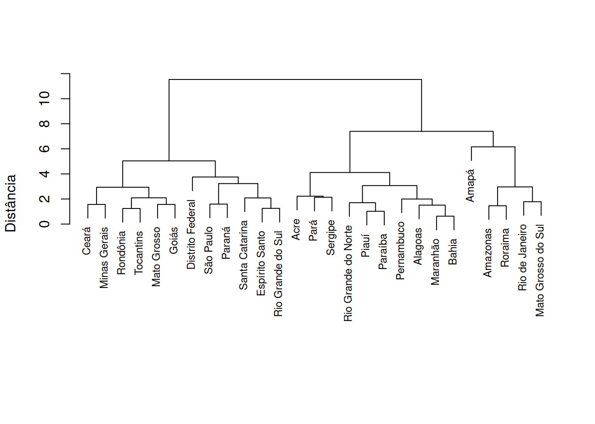
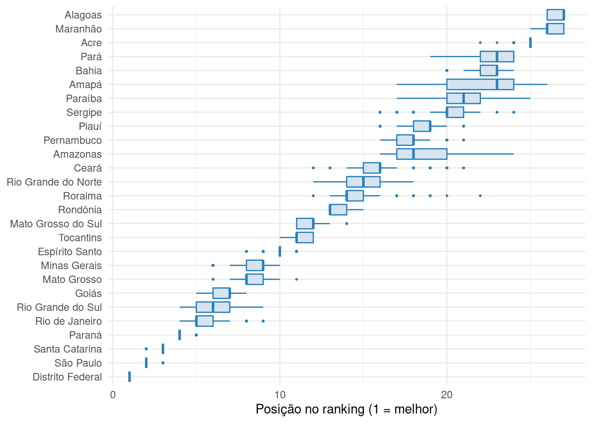
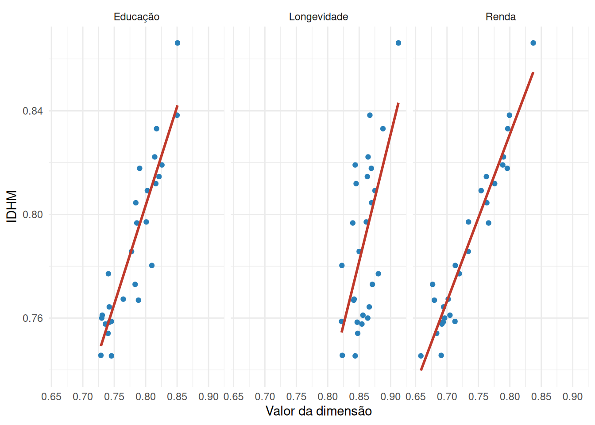
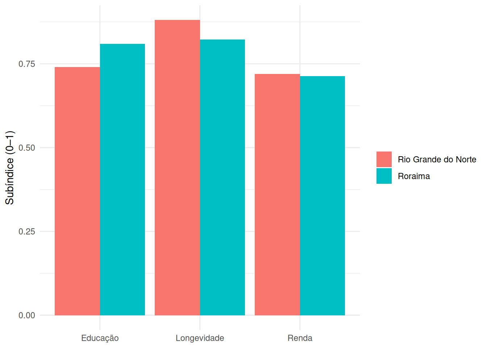
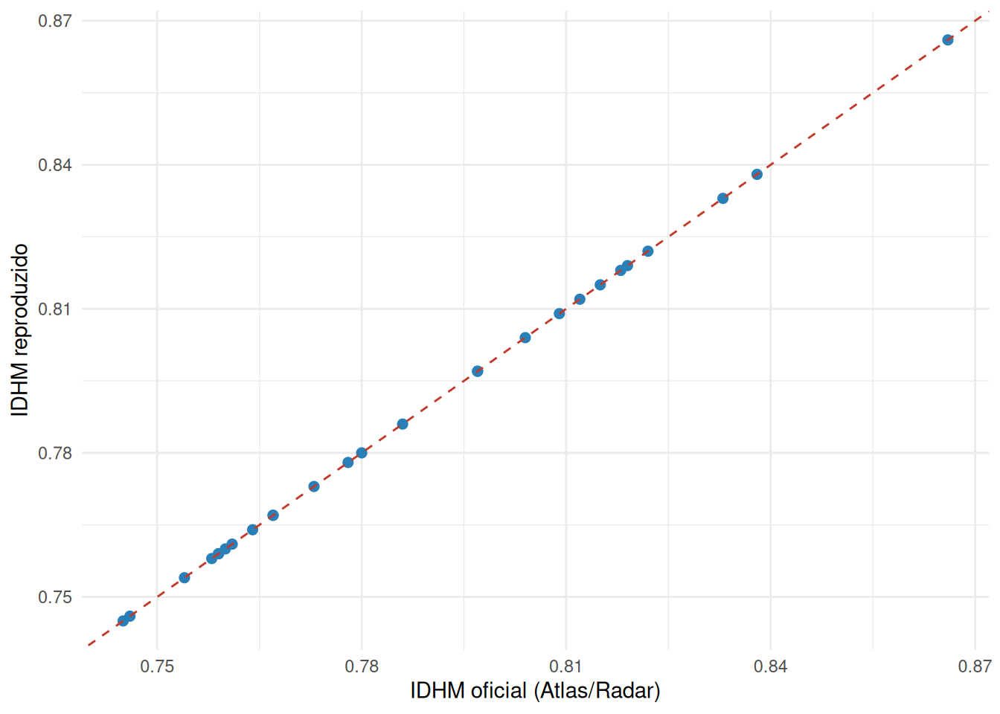
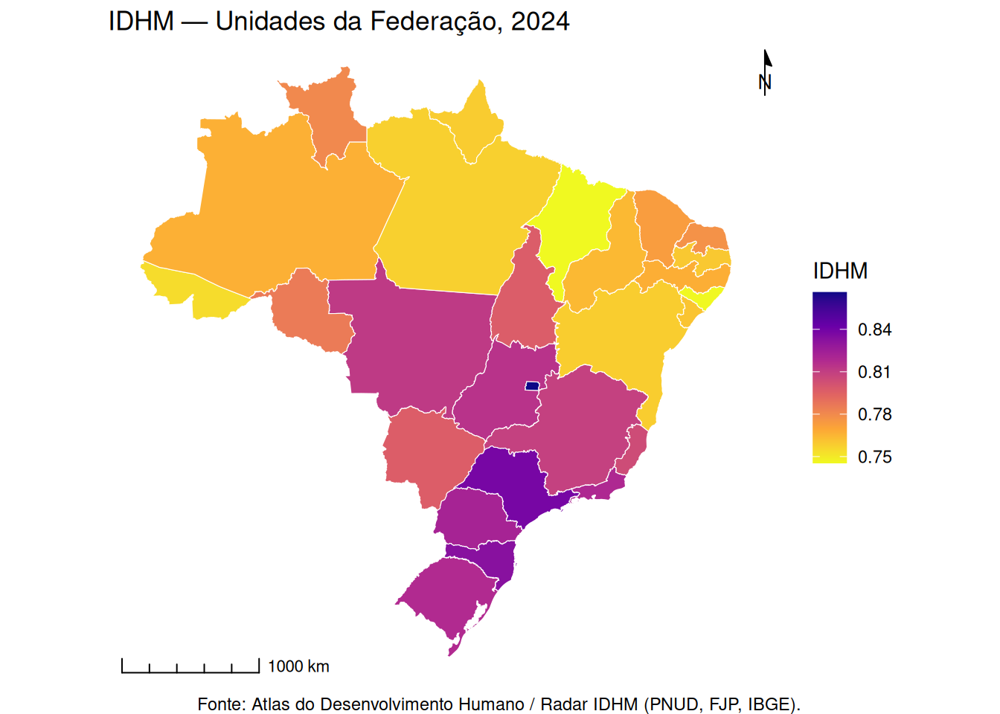
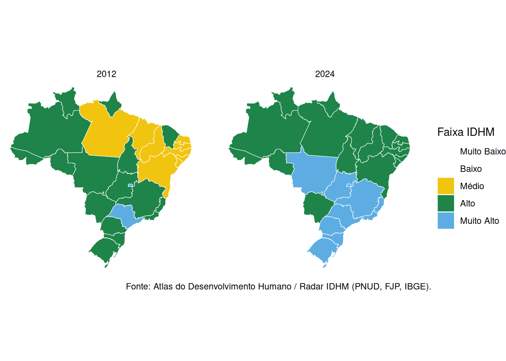
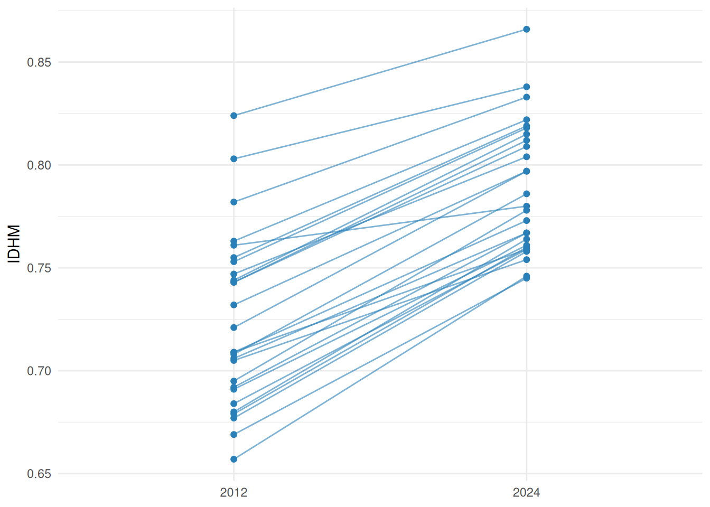

| Etapa | Descrição |
|---|---|
| 1 | Marco teórico e conceitual |
| 2 | Seleção de dados |
| 3 | Tratamento e preparação dos dados |
| 4 | Análise multivariada |
| 5 | Normalização |
| 6 | Ponderação e agregação |
| 7 | Análise de incerteza e sensibilidade |
| 8 | Volta às dimensões |
| 9 | Validação externa |
| 10 | Visualização e comunicação |
Tutorial — Produção de indicadores sintéticos
O IDHM nas 10 etapas da OCDE · Radar IDHM 2024 · 27 UFs
Caio César Soares Gonçalves ![]()
Objetivos e roteiro de trabalho
Ao final deste workshop, você deverá ser capaz de:
- situar a construção de um índice composto no fluxo das dez etapas do Handbook da OCDE (Organização para a Cooperação e Desenvolvimento Econômico, 2008);
- distinguir as quatro decisões metodológicas que definem qualquer índice — dimensões, normalização, agregação e ponderação — e reconhecer o efeito de cada uma sobre o resultado;
- operacionalizar essas decisões em R, replicando o IDHM e construindo índices alternativos a partir da mesma base;
- ler criticamente qualquer índice sintético, identificando as escolhas que o sustentam e a informação que ele suprime.
Os blocos em R são executáveis e seguem a ordem das etapas, construindo o índice de forma cumulativa: cada etapa reaproveita os objetos definidos nas anteriores.
Introdução
Contexto
Em 2024, o IDHM (Índice de Desenvolvimento Humano Municipal) do Brasil alcançou 0,805, situando o país, pela primeira vez, na faixa de “muito alto desenvolvimento humano” — ante 0,744 em 2012 (PNUD; FJP; IBGE, 2026). O marco, ainda que expressivo, suscita uma questão analítica: em que medida um valor-síntese elevado é compatível com desigualdades acentuadas entre subpopulações e territórios? Não por acaso, o Radar IDHM 2024 passou a divulgar também o IDHM ajustado à desigualdade (IDHMAD), que desconta de cada dimensão a parcela de desenvolvimento corroída pela má distribuição — o instrumento que mede, precisamente, o que o valor agregado cala. A tensão entre a capacidade comunicativa do número agregado e a informação que ele suprime é o fio condutor deste tutorial.
Da medida elementar ao índice composto
A informação estatística percorre dois movimentos distintos. Num eixo de agregação, parte-se do dado bruto (a contagem) para as estatísticas derivadas — primeiro os totais, que agregam quantidades absolutas, e sobre eles as medidas relativas: proporções, razões, taxas e médias — e, mais adiante, para os índices compostos, que combinam várias medidas num só número. Num eixo de significação, uma estatística derivada torna-se indicador quando é dotada de significado social ou programático (Jannuzzi, 2014): a taxa de desocupação é uma proporção, mas opera como indicador porque diz algo sobre o mercado de trabalho. Os dois eixos se cruzam no indicador — que pode descrever uma única dimensão (analítico) ou agregar várias num só número (sintético).
eixo de significação
(ganha sentido)
│
DADO BRUTO → ESTATÍSTICA DERIVADA → INDICADOR
(contagem) total → proporção, ├─ analítico: uma dimensão
razão, taxa, média │ (taxa de desocupação; índice simples)
└──── eixo de agregação ──┘└─ sintético: índice composto
(agrega dimensões → IDHM)Convém distinguir os termos da medida elementar: uma proporção relaciona uma parte ao todo de que faz parte (população idosa sobre população total); uma razão relaciona grandezas distintas (densidade demográfica = população/área); uma taxa, em sentido estrito, relaciona eventos a uma medida de exposição ao risco — o tempo vivido sob risco pela população, como na taxa de mortalidade ou de fecundidade —, embora boa parte das medidas correntemente designadas “taxas” sejam, em rigor, proporções, como a própria taxa de desocupação mencionada acima; uma média, embora seja formalmente uma razão (soma sobre contagem), merece nota à parte porque resume uma distribuição inteira num valor central, ao custo de ocultar sua dispersão.
Um indicador analítico descreve uma dimensão específica da realidade; um índice reexpressa uma ou mais medidas numa escala de referência — contra uma base, um padrão ou um intervalo (as referências que reencontraremos na normalização, Etapa 5). Quando combina vários indicadores para representar um fenômeno multidimensional, é um índice composto (ou sintético), como o IDHM; quando apenas reescala uma única medida contra essa referência, é um índice simples — no fundo, um indicador analítico posto numa escala de referência, como o índice de longevidade do próprio IDHM (expectativa de vida posta num intervalo de 0 a 1) ou um número-índice de preços (valor ÷ base × 100). O índice simples não é, pois, uma categoria à parte — não se confunde com o “indicador simples” da taxonomia usual —, mas o próprio indicador analítico já submetido a esse reescalonamento.
Por que “índices sociais”?
Boa parte dos fenômenos econômicos dispõe de uma métrica comum que torna a agregação quase automática: os preços convertem bens heterogêneos a uma unidade só, e o PIB (Produto Interno Bruto) soma peras e maçãs sem que o analista precise arbitrar quanto cada uma pesa — os preços de mercado já fornecem esse peso. Já bem-estar, qualidade de vida, vulnerabilidade ou desenvolvimento humano não têm essa régua única. São construtos multidimensionais cujas dimensões — renda, educação, saúde, acesso a serviços — não compartilham unidade (a renda tem preço; anos de escolaridade e expectativa de vida, não) nem se deixam somar diretamente. É a ausência de métrica comum, e não o rótulo “social” em si, que obriga a combinação de medidas parciais a se tornar uma decisão explícita e convencionada. Esses índices são ditos sociais porque seu referente é uma condição social — viver bem, estar vulnerável —, não uma grandeza com preço de mercado; e são compostos porque, na falta de uma unidade que os unifique, precisam ser montados peça a peça.
As quatro decisões de todo índice composto
Montar um índice composto exige quatro decisões que não têm solução única nem neutra (OCDE, 2008): quais dimensões incluir, como normalizar os indicadores (pôr escalas distintas numa base comparável), como agregá-los (a regra que os funde num só número) e que pesos atribuir-lhes. Raramente elas aparecem assim, separadas: no uso corrente, normalização e agregação se dissolvem num vago “como combinar”, e o próprio Handbook reúne ponderação e agregação numa só etapa. Mas cada uma tem efeito próprio. A passagem do IDH — o Índice de Desenvolvimento Humano, índice global do qual o IDHM é a adaptação brasileira — da média aritmética para a geométrica, em 2010, não mexeu em dimensões nem em pesos — apenas na regra de agregação — e ainda assim mudou o comportamento do índice: ao reduzir a compensabilidade entre dimensões — a medida em que um valor alto numa compensa um valor baixo noutra —, passou a penalizar os perfis desequilibrados. É a prova de que agregar é uma alavanca independente de ponderar. Diferentes instituições resolvem essas decisões de modos distintos: o Índice de Vulnerabilidade Social (IVS, do Ipea — Instituto de Pesquisa Econômica Aplicada), o Índice Mineiro de Responsabilidade Social (IMRS, da FJP — Fundação João Pinheiro) e o Ideb — Índice de Desenvolvimento da Educação Básica, do Inep (Instituto Nacional de Estudos e Pesquisas Educacionais Anísio Teixeira) — partem, cada qual, de uma definição própria do conceito que pretendem medir — da vulnerabilidade à qualidade da educação básica.
Este workshop segue as dez etapas do Handbook on Constructing Composite Indicators (OCDE, 2008). Convém não confundir as duas contagens: as dez etapas são um fluxo de trabalho, não dez decisões. As quatro decisões acima concentram-se em três etapas — definir dimensões (1), normalizar (5) e ponderar e agregar (6, que reúne as duas que acabamos de distinguir); as demais preparam os dados (2–4), testam a incerteza e desconstroem o índice (7–8), validam-no contra outras medidas (9) e o comunicam (10). Em cada etapa, o IDHM entra como caso âncora, mas o objetivo é mais amplo: catalogamos as técnicas disponíveis em cada decisão, inclusive as que o IDHM não adota, para que você possa transportar o método a qualquer conceito que queira medir.
Etapa 1 · Marco teórico e conceitual
A primeira etapa da construção de um índice composto consiste em definir o conceito a ser medido e as dimensões que o constituem. É uma etapa teórica — anterior a qualquer manipulação de dados —, porém decisiva: as escolhas feitas aqui condicionam todas as demais. É onde a moldura conceitual geral encontra seu primeiro objeto concreto: o desenvolvimento humano.
A escada da abstração: do conceito à medida
A passagem do conceito à medida percorre uma escada de abstração — do conceito às dimensões e destas à definição operacional dos indicadores —, numa estratégia top-down (em oposição às abordagens data-driven discutidas na Etapa 4). O percurso encerra um paradoxo: ao operacionalizar um conceito, dele nos aproximamos o suficiente para mensurá-lo e, ao mesmo tempo, dele nos afastamos, pois toda redução de um conceito rico a poucos indicadores descarta parte de seu conteúdo. As premissas embutidas nessa redução, porém, não são todas da mesma natureza. As instrumentais — se determinado indicador mede bem a dimensão que pretende representar — são, ao menos em parte, empiricamente verificáveis, e é disso que tratarão as etapas de análise multivariada (4), volta aos dados (8) e validação externa (9). Já as normativas — o que conta como desenvolvimento, quais dimensões o constituem — não se decidem por evidência: é nelas que reside o limite epistemológico retomado na conclusão.
O conceito de desenvolvimento humano — e dois contrapontos
Na formulação de Mahbub ul Haq, apoiada na abordagem das capacitações de Amartya Sen, o desenvolvimento humano é definido como a ampliação das liberdades e capacitações das pessoas, em contraposição à identificação do desenvolvimento com o mero crescimento da renda (PNUD, 1990; Sen, 2000). A renda não é abandonada — entra como uma das três dimensões —, mas rebaixada de fim a meio. Operacionalizada, a concepção se reduz a longevidade, educação e renda, deixando deliberadamente de fora a desigualdade, a liberdade política e a sustentabilidade ambiental — e é a primeira dessas ausências que reabre a tensão anunciada na introdução: um valor-síntese alto nada diz sobre como o desenvolvimento se reparte. Que essas ausências sejam reconhecidas evidencia-se no próprio fato de o PNUD tê-las, em parte, endereçado mais tarde por meio de índices complementares — o IDH ajustado à desigualdade (IDHMAD, no caso brasileiro) para a primeira; o IDH ajustado às pressões planetárias para a terceira —, sinal de que as escolhas da Etapa 1 não são definitivas, mas convenções abertas a revisão.
Esse mesmo passo — fixar um conceito e dele derivar dimensões — é dado de modos distintos por outros índices, e o contraste ilumina o quanto a Etapa 1 condiciona tudo o que segue:
Que arcabouço teórico define o conceito? (IVS, Ipea). O Índice de Vulnerabilidade Social parte de uma definição própria: vulnerabilidade é a ausência ou insuficiência de ativos — materiais e imateriais — que deveriam estar ao alcance de todos os cidadãos. Não é o avesso do IDHM, mas uma abordagem distinta, da tradição dos ativos e vulnerabilidade: o foco não está na realização de capacidades, e sim na carência dos recursos que permitiriam a uma família resistir a choques. Daí suas três dimensões serem classes de ativos — infraestrutura urbana, capital humano, renda e trabalho — e daí, também, a régua invertida: como cada indicador mede uma carência, valores próximos de 1 apontam a pior situação, ao contrário do IDHM. O Ipea ainda demarca que vulnerabilidade não se reduz a pobreza monetária, o que explica a renda ser apenas uma das três dimensões. A escolha do arcabouço conceitual — e não só das dimensões — é a decisão de Etapa 1 que aqui condiciona tudo, inclusive o sentido da escala.
Quem traduz o mandato em medida? (IMRS, FJP). No Índice Mineiro de Responsabilidade Social a autoridade do conceito vem da lei — criado pela Lei estadual 14.172/2002 e aperfeiçoado pela Lei 15.011/2004, que define responsabilidade social como o dever de a administração assegurar acesso a saúde, educação, segurança, assistência, saneamento, transporte, habitação, entre outros, e delega à FJP sua medição. Mas a lei entrega um mandato, não um índice: traduzi-lo exigiu arbitrar temas, indicadores, pesos e padrões de referência. E essa tradução não é neutra nem fiel ao texto legal — várias áreas previstas em lei (transporte, habitação, alimentação, lazer) ficaram de fora por ausência de dado municipal confiável e comparável, restrição que o assento em registros administrativos torna ainda mais aguda. Na 10ª edição (IMRS 2024, calculado sobre o triênio 2022–2024), restaram cinco dimensões operacionais — educação e saúde, as de maior peso (23% cada), seguidas de segurança pública, vulnerabilidade social e saneamento e meio ambiente (18% cada). O conceito efetivamente medido é, portanto, a interseção entre o que a lei mandou e o que os registros administrativos permitem ver — e, dentro de cada dimensão, a FJP ainda organiza os indicadores em três faces que a lei não pedia: a situação, o esforço da política pública e as características da gestão municipal. A decisão de Etapa 1, aqui, não está em escolher o conceito (a lei o fixou), mas em operacionalizá-lo sob restrição de dados — e é a restrição, tanto quanto o mandato, que desenha o índice.
Etapa 2 · Seleção de dados
Definidas as dimensões, a etapa de seleção identifica, para cada uma, o indicador observável que melhor a representa, à luz de um conjunto de critérios e das propriedades desejáveis de um bom indicador. O indicador teoricamente ideal nem sempre está disponível, e essa limitação deve ser explicitada.
Critérios de seleção (e propriedades de um bom indicador):
- Relevância e validade — o indicador adere à dimensão e mede o que pretende medir (validade de construto).
- Cobertura — alcança todas as unidades de interesse (aqui, as 27 UFs) sem lacunas sistemáticas.
- Comparabilidade no tempo e no espaço — mesma definição, fonte e referência entre períodos e territórios.
- Periodicidade e tempestividade — atualização regular e próxima do período de análise.
- Confiabilidade e tipo de fonte — censo, pesquisa amostral ou registro administrativo, cada um com trade-offs próprios.
- Sensibilidade e especificidade — capta a variação real do fenômeno sem reagir a ruído alheio.
- Mensurabilidade e parcimônia — prefira o indicador disponível e não redundante (Etapa 4); use proxies quando o ideal faltar, e documente.
- Polaridade — defina a direção (maior = melhor ou pior), decisão que reaparece na normalização (Etapa 5).
# c() cria um vetor com os nomes dos pacotes que vamos usar:
# readxl (ler Excel), dplyr/tidyr (manipular tabelas), ggplot2 (gráficos), sf (mapas),
# ggspatial (escala e rosa-dos-ventos nos mapas, Etapa 10)
pacotes <- c("readxl", "dplyr", "tidyr", "ggplot2", "sf", "ggspatial")
# setdiff() devolve os pacotes da lista que ainda NÃO estão instalados...
faltando <- setdiff(pacotes, rownames(installed.packages()))
# ...e, se houver algum faltando, instala-o automaticamente
if (length(faltando) > 0) install.packages(faltando)
# carrega (library) cada pacote da lista; invisible() apenas suprime a saída no console
invisible(lapply(pacotes, library, character.only = TRUE))# read_excel() lê a planilha; sheet = "Total" escolhe a aba. O resultado é guardado
# (com a seta <-, o operador de atribuição do R) no objeto 'radar': uma tabela (data frame)
# com o painel 2012–2024 e vários recortes geográficos
radar <- read_excel("data/adh_radar_base_2012_2024.xlsx", sheet = "Total")
# filter() mantém apenas as linhas que satisfazem as condições (ano = 2024 E recorte = UF);
# '==' testa igualdade (note os dois sinais de igual). Sobram as 27 UFs de 2024
ufs <- filter(radar, ANO == 2024, AGREGACAO == "Unidade da Federação")
# vetor com os códigos das 4 colunas de FLUXO escolar, que reutilizaremos adiante
cols_fluxo <- c("T_FREQ5A6", "T_FUND11A13", "T_FUND15A17", "T_MED18A20")
# glimpse() mostra um resumo das colunas escolhidas. Dentro de ufs[, c(...)], a vírgula
# separa [linhas, colunas]: deixando o lado das linhas vazio, pedimos TODAS as linhas e só
# as colunas listadas
glimpse(ufs[, c("NOME", "ESPVIDA", "T_FUND18M", cols_fluxo, "RDPC", "IDHM")])Rows: 27
Columns: 9
$ NOME <chr> "Rondônia", "Acre", "Amazonas", "Roraima", "Pará", "Amapá"…
$ ESPVIDA <dbl> 76.00, 75.86, 75.48, 74.35, 76.26, 74.32, 76.68, 75.62, 76…
$ T_FUND18M <dbl> 64.82, 67.18, 74.51, 79.75, 66.73, 75.35, 69.81, 63.05, 59…
$ T_FREQ5A6 <dbl> 95.64, 93.06, 94.99, 95.84, 98.41, 83.01, 96.06, 98.48, 99…
$ T_FUND11A13 <dbl> 97.15, 91.52, 92.80, 92.26, 92.34, 92.32, 98.67, 95.05, 96…
$ T_FUND15A17 <dbl> 82.29, 74.26, 73.77, 72.35, 67.65, 68.18, 80.65, 72.75, 76…
$ T_MED18A20 <dbl> 65.58, 51.88, 62.91, 65.98, 50.79, 53.05, 67.79, 58.03, 57…
$ RDPC <dbl> 769.89, 563.00, 550.19, 676.77, 592.77, 674.74, 771.42, 48…
$ IDHM <dbl> 0.786, 0.754, 0.767, 0.780, 0.758, 0.759, 0.797, 0.745, 0.…Fonte: base pública do Atlas do Desenvolvimento Humano / Radar IDHM, elaborada pelo PNUD (Programa das Nações Unidas para o Desenvolvimento) em parceria com a FJP e o IBGE (Instituto Brasileiro de Geografia e Estatística). Para o painel 2012–2024, a base reúne fontes distintas conforme a dimensão: a PNAD Contínua Anual (Pesquisa Nacional por Amostra de Domicílios, IBGE) para renda e educação; e as Projeções da População e as tábuas abreviadas de mortalidade do IBGE para a longevidade — complementadas, nas regiões metropolitanas, pelo Sistema de Informações sobre Mortalidade (SIM/Datasus) e por estatísticas vitais. Utiliza-se aqui o recorte das 27 Unidades da Federação no ano de 2024; a base completa, distribuída aos participantes, contém os demais anos, os recortes por sexo e cor e dezenas de indicadores adicionais.
A própria lista de fontes acima ilustra um ponto da seleção: o indicador é condicionado pelo desenho da fonte. Censos são exaustivos, porém decenais; pesquisas amostrais como a PNAD Contínua são periódicas, mas sujeitas a erro amostral e limitadas na desagregação geográfica — sustentam estimativas para o Brasil, as Unidades da Federação e as regiões metropolitanas, não para o conjunto dos municípios; projeções populacionais e registros vitais (como o SIM) são anuais, mas de cobertura e qualidade desiguais entre territórios. É por isso que o Radar atualiza o IDHM apenas para o Brasil, as UFs e as RMs nos anos intercensitários, ao passo que o IDHM municipal permanece atrelado ao Censo Demográfico — e por isso, também, adotamos aqui o recorte das UFs.
Longevidade
A dimensão é operacionalizada pela esperança de vida ao nascer (\(e_0\)), que sintetiza numa única medida o nível e o padrão etário da mortalidade de um período. Derivada da tábua de vida e incorporando a mortalidade por todas as causas, constitui um indicador robusto das condições gerais de saúde e sobrevivência da população. Por provir da tábua de vida, \(e_0\) independe da estrutura etária observada — o que a torna comparável entre UFs de composições etárias distintas, vantagem que a taxa bruta de mortalidade não possui. Note-se que o indicador eleito para representar a dimensão é, ele próprio, uma medida-síntese sofisticada, e não um dado bruto.
Renda
Adota-se a renda domiciliar per capita, e não a Renda Nacional Bruta per capita da metodologia global do IDH: a medida domiciliar aproxima-se mais do padrão de vida efetivo da população residente do que o agregado macroeconômico. Por se tratar de um painel 2012–2024, a renda é expressa em reais constantes, isolando a variação real do poder de compra da variação de preços — condição da comparabilidade temporal exigida no critério de seleção.
Educação
A dimensão combina dois componentes de naturezas distintas: um estoque — a escolaridade da população adulta — e um fluxo — a frequência e a progressão escolar da população jovem na idade adequada, sensível à distorção idade-série. A adaptação brasileira emprega mais indicadores educacionais do que a metodologia global. Operacionalmente, o estoque corresponde ao percentual de pessoas de 18 anos ou mais com ensino fundamental completo; o fluxo, à média de quatro indicadores de frequência e conclusão escolar, referentes às faixas de 5–6, 11–13, 15–17 e 18–20 anos — dois componentes que só serão combinados na etapa de ponderação e agregação (Etapa 6).
Etapa 3 · Tratamento e preparação dos dados
A rigor, este passo é mais amplo do que sugere o rótulo do Handbook (“imputação de dados ausentes”): é o momento em que os dados brutos se tornam aptos à análise. A imputação é apenas uma de suas frentes; ao lado dela vêm a crítica de consistência, a detecção de outliers e a suavização de séries — e é também aqui que se fixam os parâmetros que a normalização usará (os limites de referência e a polaridade de cada indicador). Toda decisão tomada neste passo condiciona os resultados e deve ser documentada.
A sequência é um fluxo, não um script
As dez etapas do Handbook são uma sequência “ideal”; índices reais a adaptam. O IMRS, por exemplo, condensa-as em sete blocos: funde a análise multivariada na própria seleção (excluindo indicadores redundantes já na escolha) e amplia este passo para um bloco de “tratamento, preparação e imputação de dados”, que reúne crítica, outliers, ausentes e suavização. Mantemos as etapas separadas por clareza didática, cientes de que, na prática, elas frequentemente se fundem.
Começa-se por inspecionar a base — lembrando que nem toda ausência aparece como NA: valores sentinela (0, -1, 99, “ignorado”) podem mascarar dados faltantes e devem ser rastreados antes de qualquer contagem.
# dim() devolve as dimensões da tabela: número de linhas (UFs) e de colunas (variáveis)
dim(ufs)[1] 27 83# o que importa aqui são os indicadores que ALIMENTAM o índice — não as dezenas de colunas
# da base. Reunimos os 8 num vetor: longevidade, escolaridade, os 4 de fluxo, renda e o
# IDHM oficial (este último para a reprodução na Etapa 9)
cols_calc <- c("ESPVIDA", "T_FUND18M", cols_fluxo, "RDPC", "IDHM")
# is.na() marca como TRUE cada célula vazia; colSums() soma esses TRUE coluna a coluna
# (no R, TRUE conta como 1 e FALSE como 0), dando o nº de ausências por variável.
# ufs[, cols_calc] restringe a checagem a essas 8 colunas
na_por_coluna <- colSums(is.na(ufs[, cols_calc]))
# filtra o resultado para exibir apenas as colunas (dentre as do cálculo) com alguma ausência
na_por_coluna[na_por_coluna > 0]named numeric(0)A base tem 27 linhas (as UFs) e 83 colunas, e o filtro não retorna nenhuma das 8 colunas do cálculo: o Radar já vem consolidado, sem dados faltantes a imputar neste recorte. A ausência de ausências dispensa a imputação, mas não a etapa — a decisão de tratamento continua valendo, como o caso do IMRS adiante deixa claro.
As técnicas existentes organizam-se pelas frentes do passo, cada uma ilustrada, quando cabe, sobre os próprios indicadores do cálculo.
Crítica e consistência — regras estruturadas que confrontam cada valor com a trajetória histórica e com limites plausíveis, sinalizando saltos abruptos e valores incompatíveis. A título de exemplo, quatro regras de plausibilidade sobre os indicadores do cálculo — em R base, sem pacotes adicionais:
# cada regra é um vetor lógico (TRUE onde a UF satisfaz a condição, FALSE onde falha).
# o & combina condições (E lógico); >= e <= testam os limites
regras <- list(
renda_positiva = ufs$RDPC > 0, # renda > 0: exigência do log (Etapa 5)
espvida_plausivel = ufs$ESPVIDA >= 50 & ufs$ESPVIDA <= 90, # esperança de vida em faixa plausível
escol_percentual = ufs$T_FUND18M >= 0 & ufs$T_FUND18M <= 100, # escolaridade (%) dentro de [0,100]
# apply(..., 1, all) verifica, linha a linha (margem 1 = UFs), se TODOS os 4 indicadores
# de fluxo caem em [0,100]; all() exige que a condição valha para os quatro de uma vez
fluxo_percentual = apply(ufs[, cols_fluxo] >= 0 & ufs[, cols_fluxo] <= 100, 1, all)
)
# sapply percorre as regras e conta, em cada uma, quantas UFs FALHAM: !ok inverte o lógico
# (TRUE vira FALSE e vice-versa) e sum() soma os TRUE. Zero em todas = base consistente
sapply(regras, function(ok) sum(!ok)) renda_positiva espvida_plausivel escol_percentual fluxo_percentual
0 0 0 0 As 27 UFs passam em todas as regras (zero falhas), o que confirma a consistência da base já consolidada. O valor do método, porém, aparece em dados brutos: a mesma estrutura de regras flagra automaticamente o percentual acima de 100, a renda nula que inviabilizaria o log ou o salto inverossímil entre anos — tornando a crítica de dados reprodutível e auditável, em vez de uma inspeção manual caso a caso. Para conjuntos maiores, pacotes como validate e pointblank formalizam exatamente essa lógica como objetos auditáveis — separando a declaração das regras de sua verificação e gerando relatórios —, mas o princípio é o destas poucas linhas.
Outliers — detecção por amplitude interquartílica (boxplot/IQR), z-score ou percentis; tratamento por aparo (remoção dos extremos) ou winsorização (substituição dos extremos pelo valor do percentil de corte — p.ex. os percentis 2,5 e 97,5), além de transformação (log) ou imputação. Importa em especial porque, sob min–max, um único outlier define o máximo ou o mínimo e comprime todo o resto da escala (Etapa 5). A regra clássica do boxplot considera atípico o valor fora da “cerca” \([\,Q_1 - 1{,}5 \cdot \text{IQR},\; Q_3 + 1{,}5 \cdot \text{IQR}\,]\), onde IQR (amplitude interquartílica) é \(Q_3 - Q_1\):
# função que devolve TRUE para os valores fora da cerca do boxplot
eh_outlier <- function(x) {
q <- quantile(x, c(.25, .75)) # 1º e 3º quartis (Q1 e Q3)
iqr <- q[2] - q[1] # amplitude interquartílica
x < q[1] - 1.5 * iqr | x > q[2] + 1.5 * iqr
}
# aplica a regra a cada indicador do cálculo e conta quantas UFs caem fora da cerca
indic <- data.frame(longevidade = ufs$ESPVIDA,
escolaridade = ufs$T_FUND18M,
fluxo = rowMeans(ufs[, cols_fluxo]),
renda = ufs$RDPC)
sapply(indic, function(x) sum(eh_outlier(x))) longevidade escolaridade fluxo renda
1 0 0 0 # qual UF é o único caso atípico (em longevidade)?
ufs$NOME[eh_outlier(ufs$ESPVIDA)][1] "Distrito Federal"Só a longevidade acusa um caso fora da cerca — o Distrito Federal (79,8 anos, contra mediana de 76,4). É a ilustração exata do alerta deste tópico: sob min–max amostral, essa única UF definiria o teto da escala de longevidade e comprimiria todas as demais. O IDHM escapa disso ao adotar balizas fixas (25 a 85 anos, Etapa 5), imunes a um extremo da amostra. Note ainda que ser extremo não é ser outlier: o DF, recordista de renda (mais do que o dobro da mediana), nem sequer é flagrado como atípico na renda por esta regra.
As duas frentes restantes não rendem ilustração nesta base — não há ausências a imputar nem ruído municipal a suavizar —, mas completam o repertório do passo.
Dados ausentes — antes de preencher, pergunte por que o dado falta, pois disso depende o método válido (Rubin, 1976). Na tipologia de Rubin (1976), a ausência pode ser: completamente aleatória (MCAR, missing completely at random) — não tem relação com nada, e então simplesmente excluir as linhas incompletas não enviesa o resultado, apenas reduz a amostra; aleatória condicional (MAR, missing at random) a algo que você observa — p.ex. faltam mais respostas em UFs de menor população, característica que está na base, e aí uma imputação por modelo é válida; ou não aleatória (MNAR, missing not at random) — quando o próprio valor que falta explica a ausência, como o município que não reporta justamente por estar em má situação, o caso mais difícil e sem correção padrão. As técnicas vão da exclusão das linhas incompletas (válida só no primeiro caso) à imputação simples por média/mediana (preenche, mas subestima a variância e atenua correlações, distorcendo a Etapa 4), à imputação por regressão ou por vizinhos semelhantes (hot-deck/kNN, pacote VIM), à imputação múltipla — que preenche várias vezes para propagar a incerteza (mice) — e a modelos de série temporal (filtro de Kalman, imputeTS).
Suavização — médias móveis (p.ex. trienais, que substituem o valor de cada ano pela média dele com os dois anos vizinhos) reduzem as oscilações de curto prazo e o ruído de eventos raros em populações pequenas (um único óbito infantil distorce uma taxa municipal), ao custo de o indicador reagir com atraso às mudanças reais.
No Radar IDHM, a base aqui utilizada já está consolidada e não apresenta ausências nos indicadores selecionados. A decisão de preparação, porém, não desaparece por omissão. O IMRS é o caso completo: assentado em registros administrativos dos 853 municípios mineiros, aplica regras de crítica, detecta outliers em séries temporais, imputa lacunas por modelo estrutural via filtro de Kalman (imputeTS) e suaviza por médias trienais — antes de fixar, para cada indicador, os limites de referência e a polaridade que alimentarão a normalização.
Etapa 4 · Análise multivariada
Antes de combinar os indicadores, examina-se a estrutura dos dados em dois eixos: entre indicadores (há redundância? a estrutura empírica respalda o agrupamento teórico?) e entre unidades (que perfis de UFs se formam?). A motivação é concreta: indicadores fortemente correlacionados capturam informação redundante, e atribuir-lhes pesos iguais superpondera, na prática, a dimensão que compartilham — a chamada dupla contagem. O alerta tem, porém, um contra-alerta: certa correlação entre medidas de um mesmo agregado é esperada e não constitui, por si só, redundância. Quem decide se duas medidas correlacionadas são “a mesma coisa” é a teoria (Etapa 1), não o coeficiente.
As técnicas se organizam por esses dois eixos.
Matriz de correlação (Pearson/Spearman) — mapeia a redundância entre os indicadores, com a função base cor() (o pacote corrplot ajuda a visualizá-la como mapa de calor):
# A análise multivariada examina os indicadores SEPARADOS — inclusive os 4 de fluxo, que só
# serão combinados na Etapa 6. Tomar a média do fluxo já aqui esconderia a redundância entre eles.
# O operador |> ("pipe") passa ufs como 1º argumento de transmute(), que monta uma tabela em que
# cada coluna é um indicador bruto (à esquerda do '=', o nome; à direita, a coluna da base):
indicadores <- ufs |>
transmute(
longevidade = ESPVIDA,
escolaridade = T_FUND18M,
fluxo_5a6 = T_FREQ5A6,
fluxo_11a13 = T_FUND11A13,
fluxo_15a17 = T_FUND15A17,
fluxo_18a20 = T_MED18A20,
renda = RDPC
)
# cor() calcula a matriz de correlação entre as colunas; round(..., 2) arredonda para 2 casas.
# use = "complete.obs" manda ignorar eventuais ausências no cálculo
round(cor(indicadores, use = "complete.obs"), 2) longevidade escolaridade fluxo_5a6 fluxo_11a13 fluxo_15a17
longevidade 1.00 0.14 0.40 0.57 0.44
escolaridade 0.14 1.00 -0.31 0.12 0.19
fluxo_5a6 0.40 -0.31 1.00 0.28 0.30
fluxo_11a13 0.57 0.12 0.28 1.00 0.69
fluxo_15a17 0.44 0.19 0.30 0.69 1.00
fluxo_18a20 0.32 0.59 0.21 0.62 0.74
renda 0.56 0.72 0.09 0.47 0.47
fluxo_18a20 renda
longevidade 0.32 0.56
escolaridade 0.59 0.72
fluxo_5a6 0.21 0.09
fluxo_11a13 0.62 0.47
fluxo_15a17 0.74 0.47
fluxo_18a20 1.00 0.64
renda 0.64 1.00A leitura da matriz contraria a expectativa ingênua e, por isso mesmo, instrui. Primeiro, os indicadores de fluxo do fundamental e do médio (11–13, 15–17 e 18–20 anos) correlacionam-se forte entre si (da ordem de 0,6 a 0,7): é essa redundância que respalda combiná-los numa única medida de fluxo (Etapa 6). O fluxo de 5–6 anos destoa — quase universalizado, varia pouco entre as UFs e por isso se descola dos demais (correlações baixas): um indicador saturado carrega pouca informação para diferenciar unidades. Segundo, escolaridade (o estoque de adultos com fundamental completo) tem correlação apenas modesta com o fluxo — exceto com o de 18–20 anos, mais próximo da conclusão da educação básica: estoque e fluxo medem facetas distintas, o legado educacional e a dinâmica escolar contemporânea, e não se reduzem um ao outro. Terceiro, e é o alerta central, a correlação mais forte entre dimensões distintas é renda × escolaridade (0,72): o caso clássico de dupla contagem ao ponderá-las igualmente. Vale o contra-alerta da abertura — é a teoria, não o coeficiente, que decide se renda e escolaridade são “a mesma coisa” —, mas a magnitude recomenda cautela.
Alpha de Cronbach — mede a consistência interna dentro de uma dimensão (não faz sentido no conjunto multidimensional). A fórmula é simples e a calculamos direto abaixo, mas o pacote psych (função alpha()) a entrega pronta. Para os cinco indicadores de educação:
# alpha de Cronbach: k/(k-1) * (1 - soma das variâncias dos itens / variância da soma dos itens)
alpha <- function(itens) {
k <- ncol(itens)
(k / (k - 1)) * (1 - sum(apply(itens, 2, var)) / var(rowSums(itens)))
}
# dimensão educação (estoque + 4 fluxo, todos em %), com e sem o fluxo saturado de 5–6 anos
c(com_5a6 = alpha(ufs[, c("T_FUND18M", cols_fluxo)]),
sem_5a6 = alpha(ufs[, c("T_FUND18M", "T_FUND11A13", "T_FUND15A17", "T_MED18A20")])) |> round(3)com_5a6 sem_5a6
0.690 0.744 O α de 0,69 sobe para 0,74 ao remover o fluxo de 5–6 anos — o mesmo item saturado que a matriz já apontara. É a leitura correta da métrica: o alpha não é um “quanto mais alto, melhor”, mas um diagnóstico de coesão; aqui, confirma que os indicadores de educação medem algo comum e que o item quase invariante pouco acrescenta.
Componentes principais (ACP; em inglês, principal component analysis, PCA) e análise fatorial — identificam a estrutura latente e podem gerar pesos a partir dos dados (bottom-up); pesos que refletem variância e correlação, não importância normativa (e pressupõem testes de adequação, como o KMO — Kaiser–Meyer–Olkin — e a esfericidade de Bartlett). Em R, prcomp() (base) faz a ACP, factanal() (base) a análise fatorial, e os pacotes FactoMineR e factoextra ampliam ambas:
# prcomp() faz a ACP; scale.=TRUE padroniza os indicadores antes (senão a renda, de maior escala,
# dominaria). Reaproveita o objeto 'indicadores' (as 7 colunas da matriz de correlação)
pca <- prcomp(indicadores, scale. = TRUE)
round(summary(pca)$importance[2, 1:3], 3) # proporção da variância resumida por PC1, PC2, PC3 PC1 PC2 PC3
0.508 0.228 0.110 round(pca$rotation[, 1], 2) # cargas (pesos) dos indicadores no 1º componente longevidade escolaridade fluxo_5a6 fluxo_11a13 fluxo_15a17 fluxo_18a20
0.36 0.28 0.17 0.42 0.43 0.46
renda
0.44 O primeiro componente sozinho resume metade da variância (≈ 0,51) e carrega quase todos os indicadores no mesmo sentido — um eixo geral de desenvolvimento que poderia servir de índice data-driven. As cargas são parecidas entre si (0,3 a 0,5), salvo a do fluxo de 5–6 anos (0,17), de novo o item que menos diferencia. Mas vale a ressalva: esses pesos maximizam variância estatística, não traduzem juízo sobre o que importa no desenvolvimento humano — razão pela qual o IDHM não os adota.
Análise de agrupamento (cluster) — muda de eixo: em vez de comparar indicadores, agrupa unidades por similaridade de perfil, revelando tipos de UF. Aqui via hclust() (base); os pacotes cluster e factoextra trazem diagnósticos (como o número ótimo de grupos) e gráficos.
# scale() padroniza; dist() calcula as distâncias entre as UFs; hclust() as agrupa de forma
# hierárquica. No dendrograma, quanto mais baixa a junção, mais parecidas são as UFs
d <- dist(scale(indicadores))
hc <- hclust(d, method = "ward.D2")
plot(hc, labels = ufs$NOME, main = NULL, xlab = "", ylab = "Distância", sub = "", cex = 0.75)
O dendrograma separa, em linhas gerais, as UFs do Sul/Sudeste/Centro-Oeste das do Norte/Nordeste, com alguns casos à parte (o Amapá, p.ex., destaca-se cedo). É a leitura “entre unidades” anunciada na abertura: duas UFs com IDHM parecido podem cair em ramos distintos por terem perfis dimensionais diferentes — exatamente o que a Etapa 8 explorará ao desmontar o índice.
Padronizar para analisar ≠ normalizar o índice. A ACP e o cluster exigem padronizar os indicadores antes (o
scale. = TRUEe oscale()dos blocos acima), senão a renda — de escala numérica muito maior — dominaria variâncias e distâncias. Essa padronização é instrumental: um z-score interno à técnica, só para a análise enxergar a estrutura. Não se confunde com a normalização da Etapa 5, que é uma decisão substantiva do índice (balizas fixas, polaridade) — e por isso a padronização aqui não inverte a ordem do fluxo. A matriz de correlação, por sua vez, dispensa esse passo (já é invariante a escala), assim como o alpha, calculado sobre indicadores na mesma unidade (%).
Vale uma ressalva de escala: com sete indicadores e 27 unidades, ACP e análise fatorial são aqui sobretudo ilustrativas — exigem mais variáveis e mais casos para serem informativas. No IDHM isso é secundário, pois a estrutura é teórica; o que se retém é o método, transponível a índices com dezenas de indicadores.
No IDHM, a estrutura é definida teoricamente (top-down), não derivada dos dados; ainda assim, estas técnicas permitem verificar a redundância entre indicadores — e, em outros índices, estimar os próprios pesos. No IMRS, aliás, essa análise não é um passo isolado: a exclusão de indicadores redundantes ocorre já na seleção (Etapa 2), a adaptação que a Etapa 3 antecipou. Na base das UFs, renda e escolaridade tendem a exibir correlação elevada, o que recomenda cautela ao tratá-las como dimensões independentes de igual peso.
Etapa 5 · Normalização
Os indicadores têm unidades distintas (anos, %, R$). É preciso pô-los numa escala comum.
A normalização encerra uma decisão pouco visível mas consequente: o “0” e o “1” da escala devem corresponder a referências fixas (balizas, ou goalposts), externas à amostra, ou aos mínimos e máximos observados em cada ano? O IDHM adota balizas fixas — é o que torna o valor de 2024 comparável ao de 2012. Com referência amostral, a comparação se perde em dois sentidos: no tempo, a melhor UF recebe 1 por definição em todo ano; e no espaço, basta incluir ou excluir uma UF para alterar o escore de todas as demais, pois o mín/máx pode mudar.
\[\text{min-max:}\quad I = \frac{x - x_{\min}}{x_{\max} - x_{\min}} \qquad\quad \text{z-score:}\quad z = \frac{x - \bar{x}}{s}\]
A polaridade entra aqui. Generalizando o min–max, substituem-se mín/máx por balizas de pior e melhor desempenho: \(I = \dfrac{x - x_{\text{pior}}}{x_{\text{melhor}} - x_{\text{pior}}}\). Quando o pior valor é o maior (indicadores de carência — distorção idade-série, mortalidade), a mesma fórmula inverte a escala. É assim que o IMRS trata seus indicadores de polaridade negativa, atribuindo a cada qual um limite “pior” e um “melhor” — e é o caminho oposto ao do IVS, que deliberadamente mantém maior = pior como o próprio sentido do índice.
Técnicas existentes — as duas primeiras (min-max e z-score) são aplicadas no exemplo abaixo; as demais seguem a mesma lógica de reescala:
- Min-max (balizas fixas ou amostrais) — reescala para o intervalo [0,1]; conta direta ou
scales::rescale(). - Z-score — centra na média e divide pelo desvio-padrão (variância 1); função base
scale(). - Ranqueamento (ordinal) — robusto a outliers, mas descarta a magnitude; função base
rank(). - Distância a metas/referência — razão entre o valor e uma meta externa, para índices orientados a metas (p.ex. os ODS — Objetivos de Desenvolvimento Sustentável).
- Distância à média do grupo — posição acima/abaixo da média (um z-score sem dividir pelo desvio).
- Categorização por percentis — agrupa em classes ordenadas;
dplyr::ntile()oucut()sobrequantile(). - Indexação a um ano-base (número-índice) — valor ÷ base × 100.
- Transformações prévias — o log é um caso da família Box-Cox (
MASS::boxcox(),bestNormalize); antes de transformar, olhe a distribuição (histograma, outliers) e cuidado: não há log de zero.
Comparando três normalizações da longevidade (min-max fixo, min-max amostral e z-score):
# o cifrão ($) acessa uma coluna da tabela pelo nome: ufs$ESPVIDA é o vetor de esperanças de vida
ev <- ufs$ESPVIDA
# as três contas abaixo operam sobre o vetor inteiro de uma vez (R é "vetorizado":
# não é preciso laço/loop para aplicar a fórmula a cada UF)
fixo <- (ev - 25) / (85 - 25) # min-max com referência fixa (balizas do IDHM)
amostral <- (ev - min(ev)) / (max(ev) - min(ev)) # min-max com o mín/máx observados na amostra
zscore <- (ev - mean(ev)) / sd(ev) # padronização z-score (mean = média, sd = desvio-padrão)
# data.frame() junta os três vetores em colunas; summary() resume cada uma (mín, média, máx...)
summary(data.frame(fixo, amostral, zscore)) fixo amostral zscore
Min. :0.8220 Min. :0.0000 Min. :-1.69825
1st Qu.:0.8437 1st Qu.:0.2394 1st Qu.:-0.63628
Median :0.8560 Median :0.3757 Median :-0.03177
Mean :0.8566 Mean :0.3829 Mean : 0.00000
3rd Qu.:0.8682 3rd Qu.:0.5101 3rd Qu.: 0.56457
Max. :0.9125 Max. :1.0000 Max. : 2.73754 Cada método responde a uma pergunta distinta. Na normalização amostral, a melhor UF recebe o valor 1 por definição, o que inviabiliza a comparação temporal; no z-score, o zero corresponde à média, e não ao pior caso. O min-max situa cada unidade entre um pior e um melhor cenário; o z-score, em relação à média da distribuição. Há ainda uma diferença além do alcance visível no summary: o z-score iguala a dispersão de todos os indicadores (variância 1), ao passo que o min–max iguala a amplitude ([0,1]) mas não a dispersão — de modo que, sob pesos iguais, a contribuição efetiva de cada indicador ao índice final depende do método de normalização adotado.
Aplicando as normalizações do IDHM
Longevidade — min-max fixo (balizas de 25 a 85 anos):
\[\text{IDHM-L} = \frac{\text{Esperança de vida} - 25}{85 - 25}\]
# cria uma NOVA coluna em ufs (ufs$i.longev) com a longevidade normalizada.
# min-max com referência fixa: baliza inferior 25, superior 85 anos
ufs$i.longev <- (ufs$ESPVIDA - 25) / (85 - 25)Com balizas fixas, um valor observado pode exceder o melhor (ou ficar aquém do pior), gerando \(I>1\) ou \(I<0\); a convenção do IDHM é truncar em [0,1] — em R, pmin(pmax(I, 0), 1).
Renda — log (retornos decrescentes) e min-max (R$ 8 a R$ 4.033, em reais constantes):
\[\text{IDHM-R} = \frac{\ln(\text{Renda}_{pc}) - \ln(8)}{\ln(4033) - \ln(8)}\]
# mesma ideia da longevidade, mas em escala logarítmica: log() é o logaritmo natural (ln).
# referências (já em log) R$ 8 e R$ 4.033, em reais constantes
ufs$i.renda <- (log(ufs$RDPC) - log(8)) / (log(4033) - log(8))O log não é um detalhe técnico, mas uma hipótese normativa (Anand & Sen): a contribuição marginal da renda ao desenvolvimento humano é decrescente — R$ 100 a mais valem mais para quem tem pouco do que para quem tem muito. De quebra, atenua a assimetria à direita típica da renda.
Educação — cada subindicador, já em percentual, é normalizado por min–max de balizas fixas 0 e 100 (dividir por 100); a combinação dos dois é agregação (Etapa 6):
# cada subindicador já está em percentual (0 a 100), então dividir por 100 o põe em [0,1]
ufs$si.escol <- ufs$T_FUND18M / 100 # estoque: escolaridade da população adulta
ufs$si.fluxo <- rowMeans(ufs[, cols_fluxo]) / 100 # fluxo: média das 4 colunas de frequência
# summary() dos quatro subíndices já normalizados, para conferir que ficaram todos em [0,1]
summary(ufs[, c("i.longev", "i.renda", "si.escol", "si.fluxo")]) i.longev i.renda si.escol si.fluxo
Min. :0.8220 Min. :0.6584 Min. :0.5914 Min. :0.7414
1st Qu.:0.8437 1st Qu.:0.6943 1st Qu.:0.6347 1st Qu.:0.8081
Median :0.8560 Median :0.7195 Median :0.6981 Median :0.8276
Mean :0.8566 Mean :0.7339 Mean :0.6944 Mean :0.8282
3rd Qu.:0.8682 3rd Qu.:0.7710 3rd Qu.:0.7481 3rd Qu.:0.8548
Max. :0.9125 Max. :0.8373 Max. :0.8338 Max. :0.8845 Os quatro subíndices ficam em [0,1], como a normalização exige — prontos para a combinação da Etapa 6. O resumo já antecipa que eles ocupam patamares distintos (o fluxo escolar mais alto; a escolaridade adulta mais baixa), diferença de nível que a agregação vai propagar ao índice final.
Etapa 6 · Ponderação e agregação
Esta etapa reúne duas decisões frequentemente confundidas: a ponderação — com que peso cada componente entra no índice — e a agregação — a regra que funde os componentes num único número. São decisões independentes, ambas juízos de valor, e cada uma tem efeito próprio sobre o resultado.
Ponderação — técnicas existentes
| Caminho | Como | Exemplo |
|---|---|---|
| Pesos iguais | a opção “neutra” (que também é uma escolha) | IDHM (3 dimensões) |
| Teoria / convenção | importância definida por argumento | IMRS pesa educação/saúde mais |
| Especialistas | survey, alocação orçamentária, AHP (Analytic Hierarchy Process, Saaty) | — |
| Participativo | consultar o público-alvo | — |
| Estatístico | a estrutura dos dados gera os pesos | análise fatorial, DEA (data envelopment analysis), regressão |
A ponderação participativa costuma ser operacionalizada pela alocação orçamentária: solicita-se a um conjunto de especialistas ou de interessados que distribua um total fixo de pontos entre as dimensões, e a média das alocações fornece os pesos.
Um ponto que costuma passar batido: em agregações aditiva e geométrica, os pesos não são “coeficientes de importância”, mas taxas de troca (substituição) entre indicadores — quanto de um compensa a perda de uma unidade de outro (OCDE, 2008). “Pesos iguais” não significa, portanto, “igual importância”, e sim taxa de troca unitária; só em métodos não-compensatórios (multicritério) os pesos atuam como importância. Daí uma segunda sutileza: a ponderação é hierárquica — pesos definidos no nível do indicador podem implicar pesos distintos no nível da dimensão, se as dimensões reúnem números desiguais de indicadores. O IMRS ilustra a ponderação explícita e em dois níveis: pesos desiguais entre dimensões (educação e saúde, 23% cada; segurança, vulnerabilidade e saneamento/meio ambiente, 18% cada) e, dentro de cada dimensão, pesos por indicador.
Agregação — técnicas existentes
\[\text{aritmética:}\quad I = \sum_k w_k I_k \qquad\quad \text{geométrica:}\quad I = \prod_k I_k^{w_k}\]
- Aditiva (média aritmética ponderada) — compensatória: a taxa de troca entre dimensões é constante (\(w_j/w_r\)), de modo que o excedente numa compensa o déficit noutra sempre na mesma razão.
- Geométrica — parcialmente compensatória: a taxa de troca depende do nível relativo (um déficit é tanto mais difícil de compensar quanto menor já é), e é isso que penaliza o desequilíbrio. Exige valores positivos: se um subíndice é 0, o índice é 0 — atenção a balizas que produzam exatamente 0 na Etapa 5.
- Multiplicativa (produto) — a média geométrica é sua forma “averaged”; o Ideb usa o produto direto (desempenho × rendimento/fluxo), em que um fator nulo zera o resultado.
- Não-compensatória / multicritério (MCDA, multi-criteria decision analysis; Condorcet/Borda) — proíbe a compensação entre dimensões; aqui, sim, os pesos exprimem importância.
Embora ponderar e agregar sejam decisões distintas, nem toda combinação é livre: alguns métodos de pesos pressupõem uma agregação — a abordagem benefício da dúvida (DEA), por exemplo, que atribui a cada unidade os pesos que maximizam seu próprio escore, requer agregação aditiva.
Ponderação e agregação na dimensão educação
A própria dimensão educação ilustra as duas decisões em escala reduzida — e em estrutura hierárquica: é preciso ponderar o estoque e o fluxo e definir como combiná-los, antes de a dimensão entrar no índice. O IDHM atribui peso 2 ao fluxo e peso 1 ao estoque — privilegiando a dinâmica escolar contemporânea sobre o legado educacional da população adulta — e os combina por média geométrica:
\[\text{IDHM-E} = \left(I_{\text{escol}}^{1} \cdot I_{\text{fluxo}}^{2}\right)^{1/3}\]
# o acento circunflexo (^) é a potência. Média geométrica ponderada = produto dos termos
# elevados aos pesos, com o expoente final 1/(soma dos pesos): aqui pesos 1 e 2, logo raiz cúbica
ufs$i.educ <- (ufs$si.escol^1 * ufs$si.fluxo^2)^(1/3)
# para comparar, a mesma média geométrica mas com pesos iguais (1 e 1 → raiz quadrada)
educ_iguais <- (ufs$si.escol^1 * ufs$si.fluxo^1)^(1/2)
# monta uma tabela com as duas versões e a diferença entre elas...
data.frame(uf = ufs$NOME,
educ_idhm = round(ufs$i.educ, 3),
educ_iguais = round(educ_iguais, 3),
dif = round(ufs$i.educ - educ_iguais, 3)) |>
# ...ordena pela diferença em valor absoluto (abs), do maior p/ o menor (desc), e mostra o topo 8.
# head(8) devolve as 8 primeiras linhas
arrange(desc(abs(dif))) |> head(8)As UFs em que o peso 2 no fluxo mais altera a educação são as de maior descompasso entre estoque e fluxo: onde a escolaridade adulta é baixa mas a frequência escolar é alta, dobrar o peso do fluxo eleva o subíndice de educação acima da média simples. A diferença é de poucos milésimos, mas a direção importa — mostra que a escolha de peso (não só a de agregação) já desloca resultados dentro de uma única dimensão.
Agregação das três dimensões
Duas perguntas governam a agregação final: as três dimensões devem pesar igualmente e uma dimensão alta pode compensar outra baixa? O IDHM atribui pesos iguais e adota a média geométrica, que limita a compensação entre dimensões. Vale o paralelo com o IMRS, que também usa média geométrica ponderada e pela mesma razão (não-substituibilidade; OCDE, 2008): o que distingue os dois índices não é a regra de agregação, mas a ponderação — igual no IDHM, desigual e explícita no IMRS. A função a seguir parametriza ambas as escolhas, permitindo variá-las e observar seus efeitos.
# Definimos NOSSA própria função. function(...) lista os argumentos de entrada; os que têm
# '=' já trazem um valor padrão, usado quando não os informamos na chamada. Assim, variar
# normalização, agregação e pesos vira só trocar argumentos.
construir_indice <- function(dados,
agregacao = "geometrica", # "geometrica" ou "aritmetica"
pesos = c(1, 1, 1)) { # pesos de longevidade, educação, renda
# apelidos curtos para os três subíndices (L, E, R), só para a fórmula ficar legível
L <- dados$i.longev; E <- dados$i.educ; R <- dados$i.renda
# normaliza os pesos para que somem 1 (w[1] é o 1º elemento do vetor w, w[2] o 2º, etc.)
w <- pesos / sum(pesos)
# if/else escolhe a regra: produto de potências (geométrica) ou soma ponderada (aritmética)
indice <- if (agregacao == "geometrica") L^w[1] * E^w[2] * R^w[3]
else w[1]*L + w[2]*E + w[3]*R
# a função devolve uma tabela com UF, índice e posição no ranking.
# rank(-indice) ordena de forma decrescente (o '-' inverte: maior índice = 1º lugar);
# ties.method = "min" dá a mesma posição (a menor) a empates
data.frame(uf = dados$NOME,
indice = round(indice, 4),
rank = rank(-indice, ties.method = "min"))
}
# chamada com os padrões (geométrica, pesos iguais) = o IDHM oficial; guardamos só a coluna 'indice'
ufs$idhm <- construir_indice(ufs)$indiceGeométrica versus aritmética
# calcula o índice nas duas regras de agregação, mudando só o argumento 'agregacao'
geo <- construir_indice(ufs, agregacao = "geometrica")
ari <- construir_indice(ufs, agregacao = "aritmetica")
comparar <- geo |>
rename(rank_geo = rank, idx_geo = indice) |> # renomeia as colunas para distinguir as versões
# left_join() cola as duas tabelas lado a lado, casando as linhas pela coluna "uf" (by = "uf")
left_join(ari |> rename(rank_ari = rank, idx_ari = indice), by = "uf") |>
mutate(mudanca = rank_geo - rank_ari) # mutate() acrescenta uma coluna; positivo = sobe ao virar aritmética
# ordena pela mudança absoluta (maior primeiro) e, com [, c(...)], seleciona as colunas a exibir
arrange(comparar, desc(abs(mudanca)))[, c("uf", "rank_geo", "rank_ari", "mudanca")]As UFs que mais ascendem ao se adotar a média aritmética são as de perfil mais desigual entre dimensões: a agregação aritmética, com sua taxa de troca constante, compensa o desequilíbrio que a geométrica recusa.
Pesos derivados dos dados (ponderação estatística)
Das cinco linhas da tabela de ponderação, a única ainda sem exemplo é a estatística — pesos gerados pelos dados. Retomando a PCA (Etapa 4), agora aplicada aos três subíndices de dimensão, o primeiro componente fornece um conjunto de pesos data-driven:
# PCA sobre os 3 subíndices das dimensões. Eles JÁ estão normalizados em [0,1] (Etapa 5), por
# isso NÃO os repadronizamos: scale. = FALSE preserva a dispersão que o min-max deixou — a PCA
# roda sobre a covariância dos subíndices como o índice de fato os usa. (scale. = TRUE imporia
# variância 1 a todos, desfazendo a normalização já feita.)
pca_dim <- prcomp(ufs[, c("i.longev", "i.educ", "i.renda")], scale. = FALSE)
# usa as cargas (em módulo) do 1º componente como pesos, normalizados para somar 1
pesos_pca <- abs(pca_dim$rotation[, 1])
pesos_pca <- pesos_pca / sum(pesos_pca)
round(pesos_pca, 3)i.longev i.educ i.renda
0.119 0.378 0.503 # compara o ranking com pesos data-driven ao do IDHM (pesos iguais), via construir_indice()
iguais <- construir_indice(ufs)
datad <- construir_indice(ufs, pesos = pesos_pca)
cor(iguais$indice, datad$indice, method = "spearman") # ≈ 1 = ordenamento quase idêntico[1] 0.9871795A renda recebe cerca de metade do peso (≈ 0,50), a educação um terço e a longevidade apenas ≈ 0,12 — e, ainda assim, o ranking se desloca pouco (Spearman ≈ 0,99; no máximo 4 posições). É a melhor advertência sobre pesos data-driven: a renda pesa mais não por ser “mais importante” para o desenvolvimento humano, mas porque varia mais entre as UFs; a longevidade, quase homogênea no país, é rebaixada pela mesma razão. Pesos da PCA medem o quanto cada dimensão diferencia as unidades, não o quanto ela importa — confundir as duas coisas é o risco, e é por isso que o IDHM fixa pesos iguais por convenção normativa, em vez de delegá-los à estatística.
Há, aliás, uma decisão embutida na própria PCA: como os subíndices já vêm normalizados (Etapa 5), optamos por não repadronizá-los (scale. = FALSE); com scale. = TRUE, que iguala as dispersões, os pesos voltariam a ≈ 1/3 cada e quase não reordenariam — mais um exemplo de como cada escolha técnica carrega sua consequência. Os demais caminhos da tabela têm pressupostos e pacotes próprios: a ponderação por especialistas via AHP (ahp, pmr) e a abordagem benefício da dúvida via DEA (Benchmarking, deaR).
Etapa 7 · Análise de incerteza e sensibilidade
Um bom índice não deve ser frágil a pequenas mudanças metodológicas — e duas perguntas distintas o interrogam. A análise de incerteza pergunta quanto o resultado se move quando se varia o espaço de escolhas plausíveis (quais indicadores incluir, imputação, normalização, pesos, agregação); a análise de sensibilidade pergunta qual dessas escolhas mais move o resultado. O Handbook recomenda usá-las juntas.
Técnicas existentes — quase todas aparecem aplicadas nos exemplos desta etapa (e na 6); apenas a forma rigorosa da sensibilidade fica como indicação:
- Análise de incerteza — propaga as fontes de incerteza (pesos, agregação, normalização…) ao índice e descreve a distribuição de posições de cada unidade (exemplo no Monte Carlo, abaixo).
- Análise de sensibilidade — aponta quais fatores respondem pela variação, idealmente por decomposição de variância e índices de Sobol’ (pacote
sensitivity), que captam também as interações entre fatores — algo além do teste um-fator-de-cada-vez usado a seguir. - Simulação de Monte Carlo — varre o espaço conjunto de escolhas, amostrando-as ao acaso; em R base, com
replicate()erunif()/sample()(exemplo abaixo). - Correlação de rankings (Spearman) — mede o quanto o ordenamento resiste à mudança de cenário; função base
cor(..., method = "spearman")(exemplo abaixo). - Deslocamento de posições — tabelas de quais unidades sobem ou descem entre cenários, com atenção aos limiares de política e aos extremos da distribuição (como nos quadros de geométrica × aritmética e do log).
Sensibilidade sistemática (Spearman)
# índice de referência (o IDHM padrão), contra o qual compararemos cada cenário
idx_padrao <- construir_indice(ufs)$indice
# list() guarda cenários de natureza mista; cada item é, ele próprio, uma lista com
# [regra de agregação, vetor de pesos]. Os nomes à esquerda do '=' rotulam cada cenário
cenarios <- list(
"renda dobrada" = list("geometrica", c(1, 1, 2)),
"educação dobrada" = list("geometrica", c(1, 2, 1)),
"índice social (s/ renda)" = list("geometrica", c(1, 1, 0)),
"aritmética (iguais)" = list("aritmetica", c(1, 1, 1))
)
# sapply() aplica a mesma função a cada cenário da lista e junta os resultados num vetor.
# Dentro da função, cen[[1]] é a regra e cen[[2]] o vetor de pesos daquele cenário
# (colchetes duplos [[ ]] extraem UM elemento de uma lista)
spearman <- sapply(cenarios, function(cen) {
idx <- construir_indice(ufs, agregacao = cen[[1]], pesos = cen[[2]])$indice
# correlação de Spearman entre o ranking padrão e o do cenário (1 = ordenamento idêntico)
round(cor(idx_padrao, idx, method = "spearman"), 3)
})
sort(spearman, decreasing = TRUE) # ordena do mais estável (≈1) ao menos estável aritmética (iguais) renda dobrada educação dobrada
0.997 0.989 0.988
índice social (s/ renda)
0.940 Quanto mais próxima de 1 a correlação de Spearman, mais o ordenamento resiste à mudança de cenário. Correlações baixas não tornam o índice “errado”: indicam que o ranking é contingente às escolhas metodológicas, que passam então a exigir justificativa substantiva — é a escolha que carrega o peso, não um defeito do índice. Note ainda que este é um teste um-fator-de-cada-vez: varia-se pesos ou agregação, não o espaço conjunto; a versão rigorosa percorre as combinações por Monte Carlo e atribui a variação a cada fator.
Incerteza por simulação de Monte Carlo
O teste anterior fixa um cenário por vez. A análise de incerteza recomendada pelo Handbook faz o oposto: amostra o espaço conjunto de escolhas plausíveis e observa a distribuição de posições que daí resulta para cada unidade. Abaixo, cada uma das 1.000 simulações sorteia um peso para cada dimensão (entre 0,5 e 2) e uma das duas regras de agregação — e registra o ranking completo das 27 UFs.
# fixa a semente do gerador aleatório: garante que os "sorteios" saiam iguais a cada execução
# (reprodutibilidade). Qualquer número serve; usamos 2026
set.seed(2026)
# replicate(1000, {...}) repete o bloco entre chaves 1.000 vezes e empilha os resultados
# em colunas — cada coluna é o ranking das 27 UFs em uma simulação
sim <- replicate(1000, {
w <- runif(3, 0.5, 2) # 3 pesos sorteados ao acaso entre 0,5 e 2
agr <- sample(c("geometrica", "aritmetica"), 1) # sorteia 1 das 2 regras de agregação
construir_indice(ufs, agregacao = agr, pesos = w)$rank
})
rownames(sim) <- ufs$NOME # nomeia as linhas da matriz com as UFs
# prepara os dados para o gráfico: transforma a matriz (UFs × 1.000 simulações) em formato
# "longo" (uma linha por par UF–simulação), que é o que o ggplot espera
mc <- as.data.frame(sim) |>
mutate(uf = ufs$NOME) |>
# pivot_longer empilha todas as colunas de simulação numa só coluna "rank"; o -uf significa
# "todas as colunas, exceto uf"
pivot_longer(-uf, values_to = "rank") |>
# reordena as UFs pela posição MEDIANA, para o gráfico sair ordenado do melhor ao pior
mutate(uf = reorder(uf, rank, median))
# ggplot constrói o gráfico em camadas, somadas com '+'. aes() mapeia variáveis a eixos;
# geom_boxplot() desenha, para cada UF, a caixa que resume a distribuição das 1.000 posições
ggplot(mc, aes(rank, uf)) +
geom_boxplot(outlier.size = 0.4, fill = "#d6e4f0", color = "#2980b9") +
labs(x = "Posição no ranking (1 = melhor)", y = NULL) + # rótulos dos eixos
theme_minimal() # tema visual limpo
A leitura é imediata: caixas estreitas (Distrito Federal, São Paulo e Santa Catarina no topo; Maranhão e Alagoas na base) indicam posições robustas às escolhas metodológicas; caixas largas, no miolo da distribuição (Amazonas, Amapá), assinalam unidades cuja posição é artefato da regra adotada, e não um fato estável sobre o desenvolvimento. É o mesmo padrão que o IMRS reporta — estabilidade nos extremos, sensibilidade no centro —, agora medido e não apenas afirmado. A largura da caixa é, no fundo, uma medida honesta de quanto se pode confiar em cada posição do ranking.
O efeito da transformação logarítmica
# refaz a normalização da renda SEM o logaritmo (min-max linear), para isolar o efeito do log
renda_sem_log <- (ufs$RDPC - 8) / (4033 - 8)
# recompõe o índice com essa renda alternativa, mantendo longevidade e educação
i_sem_log <- (ufs$i.longev * ufs$i.educ * renda_sem_log)^(1/3)
# compara as posições com e sem log lado a lado
data.frame(uf = ufs$NOME,
rank_com_log = rank(-ufs$idhm, ties.method = "min"),
rank_sem_log = rank(-i_sem_log, ties.method = "min")) |>
mutate(mudanca = rank_com_log - rank_sem_log) |> # quantas posições cada UF se desloca
arrange(desc(mudanca)) |> head(10) # as 10 que mais sobem ao retirar o logSem a transformação logarítmica, as unidades de maior renda dominam o topo do ordenamento. O logaritmo é, portanto, uma escolha de valor — incorpora a premissa de retornos decrescentes da renda — e não uma mera conveniência técnica.
Na prática, o IMRS submeteu todos os subíndices a normalizações (ranqueamento vs min–max) e agregações (aritmética vs geométrica) alternativas — e suas combinações —, nos dois níveis de agregação, concluindo por estabilidade estrutural, sobretudo nos extremos da distribuição. Vale adotar uma prática de redação do próprio relatório do IMRS: emparelhar a análise de robustez com uma seção explícita de limitações (lá intitulada “robustez e limitações”), em que se declaram a dependência da qualidade dos registros administrativos e a sensibilidade estatística em municípios de pequeno porte.
Etapa 8 · Volta às dimensões
Esta é a “volta aos dados” do Handbook: desconstruir o agregado para expor o que ele esconde. A média oculta heterogeneidade — duas UFs com o mesmo IDHM podem ter perfis opostos —, e é exatamente o passo que arma o leitor contra a crítica retomada no encerramento (usar o índice como critério único leva a erros de focalização).
Técnicas existentes — todas ilustradas nesta etapa:
- Decomposição nos subíndices — aditiva direta na agregação aritmética; aditiva nos logaritmos na geométrica (exemplos abaixo).
- Contribuição de cada dimensão à variação — entre unidades (gráfico a seguir) e ao longo do tempo (decomposição 2012→2024, mais adiante).
- Perfis por unidade — radar ou barras empilhadas/agrupadas;
ggplot2para as barras,fmsbouggradarpara o radar. - Identificação de unidades com índice igual e composição distinta — o caso que melhor expõe a heterogeneidade oculta pela média (exemplo a seguir).
ufs |>
select(idhm, i.longev, i.educ, i.renda) |> # mantém só o índice e os três subíndices
# empilha as três colunas de dimensão em duas: "dimensao" (o nome) e "valor" (o número)
pivot_longer(c(i.longev, i.educ, i.renda), names_to = "dimensao", values_to = "valor") |>
# recode() troca os códigos internos por rótulos legíveis para a legenda do gráfico
mutate(dimensao = recode(dimensao,
i.longev = "Longevidade", i.educ = "Educação", i.renda = "Renda")) |>
ggplot(aes(valor, idhm)) + # eixo x = valor da dimensão, y = IDHM
geom_point(color = "#2980b9") + # um ponto por UF
geom_smooth(method = "lm", se = FALSE, color = "#c0392b") + # reta de regressão (lm), sem faixa de erro
facet_wrap(~dimensao) + # um painel separado para cada dimensão
labs(x = "Valor da dimensão", y = "IDHM") +
theme_minimal()
A dimensão cuja reta de ajuste é mais inclinada é a que mais diferencia as UFs; a de reta mais plana quase não contribui para distingui-las. A inclinação, porém, é uma heurística: ela mistura a dispersão da dimensão e sua covariação com o índice (inclinação = correlação × razão de desvios-padrão) e não se confunde com o peso atribuído, que é igual (1/3) para as três. Sob pesos iguais, é a dimensão de maior dispersão entre as UFs que mais governa o ordenamento — efeito que a normalização da Etapa 5 já condiciona. Uma leitura mais limpa usa a correlação (ou o R²) de cada dimensão com o índice.
Mesmo índice, perfis distintos
A demonstração mais direta da tese da etapa: duas UFs com IDHM praticamente igual podem chegar lá por caminhos opostos. Rio Grande do Norte e Roraima têm o mesmo índice (≈ 0,78), mas composições trocadas:
# seleciona as duas UFs e empilha seus três subíndices para o gráfico
perfil <- ufs |>
filter(NOME %in% c("Rio Grande do Norte", "Roraima")) |>
select(NOME, i.longev, i.educ, i.renda) |>
pivot_longer(-NOME, names_to = "dimensao", values_to = "valor") |>
mutate(dimensao = recode(dimensao,
i.longev = "Longevidade", i.educ = "Educação", i.renda = "Renda"))
# barras agrupadas (position = "dodge") comparam, dimensão a dimensão, as duas UFs
ggplot(perfil, aes(dimensao, valor, fill = NOME)) +
geom_col(position = "dodge") +
labs(x = NULL, y = "Subíndice (0–1)", fill = NULL) +
theme_minimal()
O índice agregado é o mesmo, mas o Rio Grande do Norte se sustenta na longevidade e Roraima, na educação — a renda quase empata. Um corte de política guiado só pelo IDHM trataria as duas como idênticas; a volta às dimensões mostra que elas demandariam intervenções diferentes. É a tradução concreta da advertência da abertura — e a ponte para a crítica da elegibilidade, retomada no encerramento.
Dois desdobramentos valem a menção. Sob agregação geométrica, a contribuição de cada dimensão não é aditiva no nível, mas o é no logaritmo — \(\ln I = \tfrac{1}{3}(\ln I_L + \ln I_E + \ln I_R)\) —, de modo que decompor o log do índice separa de forma limpa o quanto cada dimensão aporta. E a mesma lógica se aplica no tempo: decompor a variação do índice entre 2012 e 2024 (usando o painel completo, em radar) revela qual dimensão puxou a mudança. Tomando os subíndices oficiais (IDHM_L, IDHM_E, IDHM_R), que já vêm normalizados em [0,1], a variação média de cada dimensão entre as 27 UFs é:
# volta à base completa 'radar' para comparar dois anos
delta <- radar |>
# %in% testa se ANO é um dos valores do vetor c(2012, 2024) — guarda só esses dois anos
filter(AGREGACAO == "Unidade da Federação", ANO %in% c(2012, 2024)) |>
select(NOME, ANO, IDHM_L, IDHM_E, IDHM_R) |>
# pivot_wider faz o oposto de pivot_longer: "alarga" a tabela, criando colunas separadas por
# ano (IDHM_L_2012, IDHM_L_2024, ...), o que permite subtrair um ano do outro na mesma linha
pivot_wider(names_from = ANO, values_from = c(IDHM_L, IDHM_E, IDHM_R)) |>
transmute(uf = NOME,
d_long = IDHM_L_2024 - IDHM_L_2012, # variação 2012→2024 de cada dimensão
d_educ = IDHM_E_2024 - IDHM_E_2012,
d_renda = IDHM_R_2024 - IDHM_R_2012)
# colMeans() tira a média de cada coluna — aqui, a variação média entre as 27 UFs por dimensão
round(colMeans(delta[, c("d_long", "d_educ", "d_renda")]), 4) d_long d_educ d_renda
0.0294 0.1257 0.0331 A educação avança cerca de quatro vezes mais que longevidade e renda no período — é ela que puxa a subida do IDHM entre 2012 e 2024. A decomposição transforma uma afirmação genérica (“o país melhorou”) numa atribuição verificável: qual dimensão melhorou, e quanto. No limite, é também aqui que se entende o IDHMAD: ajustar o IDHM pela desigualdade dentro de cada dimensão é uma “volta aos dados” institucionalizada, que reabre o agregado para mostrar quanto da média é corroído pela má distribuição.
Etapa 9 · Validação externa
Esta etapa — a “ligação com outras medidas” do Handbook — abriga dois exercícios distintos. O primeiro é de reprodução: recalcular o índice e confrontá-lo com o valor oficial verifica se o nosso pipeline (normalização, pesos, agregação, truncamento) reproduz o publicado. O segundo é a validação externa propriamente dita: correlacionar o índice com indicadores distintos, porém relacionados (pobreza, emprego, mortalidade), para aferir validade convergente — e, no reverso, discriminante: se o índice se correlaciona quase perfeitamente com um único indicador já existente, ele pouco acrescenta.
Técnicas existentes — todas aplicadas a seguir:
- Comparação com a referência oficial (reprodução) — confronta o índice recalculado com o publicado, pela correlação e pela maior diferença absoluta (R base).
- Correlação com indicadores externos relacionados — afere a validade convergente (e, no reverso, a discriminante) por Pearson/Spearman, com
cor(). - Concordância no nível das faixas de classificação (não só do valor) — tabela cruzada das faixas; a concordância pode ainda ser medida formalmente pelo κ de Cohen (pacotes
irr,psych). - Comparação com índices complementares — p.ex. o IDHMAD, que mostra quanto a desigualdade reordena as unidades (ou um índice de vulnerabilidade, com quem se espera correlação negativa).
Reprodução do índice oficial
\[\text{IDHM} = \left(\text{IDHM-L} \cdot \text{IDHM-E} \cdot \text{IDHM-R}\right)^{1/3}\]
Faixas: Muito Baixo (≤ 0,499) · Baixo (0,500–0,599) · Médio (0,600–0,699) · Alto (0,700–0,799) · Muito Alto (≥ 0,800).
A reprodução parece trivial — basta a fórmula —, mas bater ao último dígito exige replicar duas convenções numéricas do Atlas: arredondar cada subíndice a três casas antes de combiná-los (é assim que IDHM_L, IDHM_E, IDHM_R são publicados) e usar arredondamento comercial (metade para cima), em vez do padrão do R (metade para o número par).
# arredondamento comercial (metade para cima), em vez do padrão do R (metade para o par)
arred <- function(x) floor(x * 1000 + 0.5) / 1000
# replica a convenção do Atlas: cada subíndice arredondado a 3 casas antes de combinar;
# na educação, os subcomponentes (estoque e fluxo) também são arredondados
L <- arred(ufs$i.longev)
R <- arred(ufs$i.renda)
E <- arred((arred(ufs$si.escol)^1 * arred(ufs$si.fluxo)^2)^(1/3))
idhm_repro <- arred((L * E * R)^(1/3))
# dispersão do oficial (eixo x) contra o reproduzido (eixo y)
ggplot(ufs, aes(IDHM, idhm_repro)) +
geom_point(color = "#2980b9", size = 2) +
# reta de 45° (y = x): se a reprodução bate com o oficial, os pontos caem sobre ela
geom_abline(slope = 1, intercept = 0, color = "#c0392b", linetype = "dashed") +
labs(x = "IDHM oficial (Atlas/Radar)", y = "IDHM reproduzido") +
theme_minimal()
# concordância quantificada: correlação, maior diferença e quantas UFs batem exato (de 27)
c(correlacao = cor(ufs$IDHM, idhm_repro),
maior_dif = max(abs(ufs$IDHM - idhm_repro)),
iguais_ao_oficial = sum(idhm_repro == ufs$IDHM)) |> round(4) correlacao maior_dif iguais_ao_oficial
1 0 27 Os 27 pontos caem exatamente sobre a reta de 45°: correlação 1, diferença máxima 0, todas as UFs idênticas ao oficial. O segredo não estava nas fórmulas — essas o tutorial já tinha — mas nas convenções de arredondamento. Fica a lição: reproduzir um índice publicado exige replicar não só as fórmulas, mas as convenções numéricas (ordem de arredondamento, regra de desempate) que quase nunca constam da metodologia. (O idhm usado no resto do tutorial mantém precisão total, sem arredondamento intermediário; a diferença, na 3ª casa decimal, não altera rankings nem mapas.)
Convém ainda checar a concordância na resolução que orienta decisões — a faixa:
# cut() converte um número contínuo em categorias, fatiando-o nos pontos de corte informados.
# -Inf e Inf são "menos/mais infinito"; right = FALSE faz o intervalo fechar à esquerda
faixa <- function(x) cut(x, c(-Inf, .5, .6, .7, .8, Inf), right = FALSE,
labels = c("Muito Baixo", "Baixo", "Médio", "Alto", "Muito Alto"))
# table() cruza as faixas do oficial com as do reproduzido: a diagonal mostra as concordâncias
table(oficial = faixa(ufs$IDHM), reproduzido = faixa(idhm_repro)) reproduzido
oficial Muito Baixo Baixo Médio Alto Muito Alto
Muito Baixo 0 0 0 0 0
Baixo 0 0 0 0 0
Médio 0 0 0 0 0
Alto 0 0 0 17 0
Muito Alto 0 0 0 0 10Tudo na diagonal: as 27 UFs caem na mesma faixa nos dois cálculos — coerente com a reprodução exata. A concordância vale não só para o valor, mas para a classe, a resolução que de fato orienta leitura e política.
Validação externa (convergente e discriminante)
# indicadores EXTERNOS, relacionados mas NÃO usados no índice, vindos da própria base:
# proporção de pobres (PMPOB), mortalidade infantil (MORT1) e índice de Gini (GINI).
# O vetor abaixo guarda, para cada apelido, o nome real da coluna na base
externos <- c(pobreza = "PMPOB", mort_infantil = "MORT1", gini = "GINI")
# sapply() percorre esse vetor e, para cada coluna, correlaciona o nosso índice com ela.
# ufs[[col]] usa o nome guardado em 'col' para pegar a coluna correspondente
sapply(externos, function(col) round(cor(ufs$idhm, ufs[[col]], method = "spearman"), 3)) pobreza mort_infantil gini
-0.825 -0.751 -0.308 Os três sinais são negativos, como a teoria prevê: onde o desenvolvimento humano é maior, há menos pobreza e menos mortalidade infantil. A correlação com pobreza (−0,83) e mortalidade infantil (−0,75) é forte — validade convergente —, mas longe de perfeita, o que afasta a suspeita de redundância: o IDHM não é mero decalque de nenhuma dessas medidas. Já a correlação fraca com o Gini (−0,31) é o achado mais instrutivo: o nível de desenvolvimento humano diz pouco sobre a desigualdade na sua repartição — precisamente a dimensão que o IDHM deixa de fora (Etapa 1) e que o IDHMAD reintroduz, abaixo.
Comparação com o índice complementar (IDHMAD)
O IDHM ajustado à desigualdade desconta de cada dimensão a parcela corroída pela má distribuição. Confrontá-lo com o IDHM mede, em número, quanto a desigualdade reordena as UFs — fechando o fio condutor anunciado na introdução.
# monta uma tabela com o IDHM, o IDHMAD (ajustado à desigualdade), a perda (%) e a posição
# de cada UF nos dois rankings; 'desloca' = quantas posições a UF muda ao passar de um ao outro
ad <- ufs |>
transmute(uf = NOME, idhm = IDHM, idhmad = IDHMAD, perda = IDHMAD_PERDA,
rank_idhm = rank(-IDHM, ties.method = "min"),
rank_idhmad = rank(-IDHMAD, ties.method = "min"),
desloca = rank_idhm - rank_idhmad) # positivo = sobe ao ajustar pela desigualdade
# dois resumos: a correlação entre os dois rankings e a perda média (mean = média) entre as UFs
c(spearman = round(cor(ad$idhm, ad$idhmad, method = "spearman"), 3),
perda_media = round(mean(ad$perda), 1)) # perda média (%) por desigualdade spearman perda_media
0.955 20.400 # as 8 UFs que mais se deslocam (em valor absoluto) ao ajustar o índice pela desigualdade
arrange(ad, desc(abs(desloca))) |> head(8)A perda média ronda os 20%: um quinto do desenvolvimento humano agregado das UFs evapora quando se leva a desigualdade em conta. O ordenamento, porém, é largamente preservado (Spearman ≈ 0,96) — sinal de que desigualdade e nível caminham juntos no atacado, mas não no varejo: algumas UFs descem várias posições ao se descontar a má distribuição, e são justamente essas as que um IDHM “razoável” mascararia. É a tradução empírica da tese do tutorial: o valor-síntese cala o que o índice complementar devolve à vista.
Etapa 10 · Visualização e comunicação
A forma de apresentar decide se o índice é compreendido — e a etapa final do Handbook (disseminação) lembra que comunicar é parte do método, não um adendo.
Técnicas existentes:
- Mapas coropléticos —
sf+ggplot2(geom_sf); exemplo abaixo. - Tabelas de ranking —
knitr::kable, ougt/DTpara versões formatadas e interativas. - Dispersões e facetas —
ggplot2(facet_wrap); como no gráfico por dimensão da Etapa 8. - Gráficos de inclinação (slope charts) — para a evolução no tempo;
ggplot2(exemplo abaixo). - Painéis de perfil por unidade — barras ou radar (Etapa 8);
ggplot2,fmsb/ggradar. - Dashboards interativos —
shiny,flexdashboard,plotly,leaflet(mapas).
Em todas, vale o mesmo princípio: transparência sobre as escolhas que produziram o número.
Três cuidados técnicos separam um mapa que informa de um que engana. Primeiro, a classificação: cortes por intervalos iguais, quantis ou quebras naturais (Jenks) contam histórias diferentes a partir dos mesmos dados; para o IDHM, o mais defensável é usar as faixas oficiais (Muito Baixo a Muito Alto), que são fixas e comparáveis no tempo. Segundo, a paleta: para uma grandeza que vai do pior ao melhor, uma escala sequencial é adequada; convém que seja perceptualmente uniforme e legível para daltônicos (as paletas viridis atendem aos dois critérios). Terceiro, o viés de área: no mapa, UFs extensas dominam o olhar independentemente de população, de modo que o coroplético deve vir acompanhado de um ranking ou de um cartograma para não confundir tamanho com magnitude. A esses cuidados somam-se os elementos obrigatórios de todo mapa temático — título, legenda, escala, orientação (norte) e fonte —, presentes no mapa a seguir (escala e norte via pacote ggspatial).
# st_read() (pacote sf) lê o arquivo geográfico com os contornos das UFs; quiet = TRUE silencia mensagens
uf_geo <- st_read("data/uf_brasil.geojson", quiet = TRUE)
# projeta para SIRGAS 2000 / Polyconic (EPSG:5880), o sistema oficial para mapas do Brasil em metros:
# torna a barra de escala correta (em lat/long a escala variaria com a latitude)
uf_geo <- st_transform(uf_geo, 5880)
# as.integer() converte o código do IBGE em número inteiro, para casar com a base por valor numérico
# (mais seguro que casar por nome, que varia em acento e grafia)
uf_geo$CODIGO <- as.integer(uf_geo$codigo_ibg)
# left_join() cola os dados do IDHM ao mapa, casando pela coluna CODIGO
mapa <- left_join(uf_geo, mutate(ufs, CODIGO = as.integer(CODIGO)), by = "CODIGO")
ggplot(mapa) +
# geom_sf() desenha os polígonos das UFs; fill = idhm pinta cada uma conforme seu índice
geom_sf(aes(fill = idhm), color = "white", linewidth = 0.2) +
# escala de cor contínua viridis (legível p/ daltônicos); direction = -1 inverte (escuro = maior)
scale_fill_viridis_c(option = "plasma", direction = -1, name = "IDHM") +
# elementos cartográficos obrigatórios, além do título e da legenda (acima):
annotation_scale(location = "bl", style = "ticks") + # escala
annotation_north_arrow(location = "tr", style = north_arrow_minimal(), # orientação (norte)
height = unit(0.8, "cm"), width = unit(0.8, "cm")) +
labs(title = "IDHM — Unidades da Federação, 2024",
caption = "Fonte: Atlas do Desenvolvimento Humano / Radar IDHM (PNUD, FJP, IBGE).") + # fonte
theme_void() # tema sem eixos nem grades, adequado a mapas
O mapa usa preenchimento contínuo (scale_fill_viridis_c), o que privilegia o gradiente; para comunicar a um público não técnico, costuma ser mais legível discretizar nas faixas oficiais, tornando legíveis as classes de desenvolvimento humano em vez de tons quase indistinguíveis. Com as cores do próprio Atlas/PNUD (do vermelho ao azul) e dois anos lado a lado, o mapa ainda comunica a evolução:
# paleta oficial do Atlas/PNUD: vermelho → laranja → amarelo → verde → azul
cores_idhm <- c("Muito Baixo" = "#C0392B", "Baixo" = "#E67E22", "Médio" = "#F1C40F",
"Alto" = "#1E8449", "Muito Alto" = "#5DADE2")
# IDHM oficial das UFs em 2012 e 2024, discretizado nas 5 faixas com cut()
faixas_anos <- radar |>
filter(AGREGACAO == "Unidade da Federação", ANO %in% c(2012, 2024)) |>
transmute(CODIGO = as.integer(CODIGO), ANO,
faixa = cut(IDHM, c(-Inf, .5, .6, .7, .8, Inf), right = FALSE,
labels = names(cores_idhm)))
# junta ao mapa: cada UF aparece duas vezes (uma por ano), para os dois mapas lado a lado
mapa_anos <- left_join(uf_geo, faixas_anos, by = "CODIGO")
ggplot(mapa_anos) +
geom_sf(aes(fill = faixa), color = "white", linewidth = 0.2) +
facet_wrap(~ANO) + # um mapa por ano, lado a lado
# scale_fill_manual fixa a cor de cada faixa; drop = FALSE mantém as 5 na legenda,
# mesmo as ausentes (Muito Baixo, Baixo), para a escala ficar comparável entre anos
scale_fill_manual(values = cores_idhm, drop = FALSE, name = "Faixa IDHM") +
labs(caption = "Fonte: Atlas do Desenvolvimento Humano / Radar IDHM (PNUD, FJP, IBGE).") +
theme_void()
Entre 2012 e 2024, as UFs em “Médio” (amarelo) desaparecem e surgem as primeiras em “Muito Alto” (azul): a mesma progressão que a decomposição temporal e o slope chart quantificaram, agora legível no território.
A escolha entre gradiente e faixas não é estética: o gradiente sugere precisão milimétrica que o índice não tem (diferenças de 0,001 entre UFs não são substantivas), ao passo que as faixas comunicam a ordem de grandeza que importa. Comunicar bem é, no fim, comunicar com honestidade — exibir o número e, ao lado, as escolhas e limites que o constituem, que é o ponto retomado no encerramento.
Evolução no tempo (slope chart)
O mapa fotografa 2024; para mostrar a trajetória, um gráfico de inclinação liga o valor de cada UF em dois momentos. Usando o painel completo (radar), o IDHM de 2012 e de 2024:
# painel com os dois anos; ANO como fator vira eixo categórico (dois pontos no x)
evol <- radar |>
filter(AGREGACAO == "Unidade da Federação", ANO %in% c(2012, 2024)) |>
mutate(ANO = factor(ANO))
# group = NOME liga os dois anos de cada UF por uma linha — a "inclinação" de cada trajetória
ggplot(evol, aes(ANO, IDHM, group = NOME)) +
geom_line(color = "#2980b9", alpha = 0.6) +
geom_point(color = "#2980b9", size = 1.6) +
labs(x = NULL, y = "IDHM") +
theme_minimal()
Todas as 27 UFs sobem entre 2012 e 2024 (variação média ≈ 0,065), e as retas convergem de leve: as que partiam mais baixo cresceram mais, estreitando a distância para o topo. O slope chart comunica num só quadro o que a decomposição temporal da Etapa 8 quantificou — e, fiel ao princípio da etapa, mostra a evolução sem sugerir uma precisão que o índice não tem.
Exercício
Para consolidar o método, construa um índice alternativo e compare-o ao IDHM oficial:
- Escolha um cenário — outro conjunto de pesos, a agregação aritmética ou um índice sem a dimensão renda (
pesos = c(1, 1, 0)). - Calcule o índice com
construir_indice()e gere o ranking e o mapa correspondente, adaptando o bloco da Etapa 10 — com os elementos cartográficos obrigatórios (título, legenda, escala, norte, fonte). - Identifique quais UFs mais sobem e mais descem em relação ao IDHM oficial e interprete o resultado.
- Confronte sua leitura com a tese do workshop: a mudança observada é defensável em termos substantivos, ou é um artefato da regra de agregação e dos pesos? (Lembre que, em agregação compensatória, o peso é uma taxa de troca, não um coeficiente de importância.)
Para ir além (opcional) — reaproveitando as técnicas das etapas anteriores:
- Robustez (Etapa 7) — em vez de um único cenário, rode o Monte Carlo e veja se a sua UF de interesse tem posição estável ou volátil.
- Validação externa (Etapa 9) — correlacione o seu índice com um indicador externo (pobreza, mortalidade) e veja se a mudança de pesos melhora ou piora a validade convergente.
- Pesos data-driven (Etapa 6) — compare o seu cenário com os pesos derivados da PCA: a sua escolha se aproxima ou se afasta do que os dados “sugerem”?
- Perfis (Etapa 8) — para as UFs que mais se deslocam, desenhe o gráfico de perfil e mostre qual dimensão explica o deslocamento.
# troque a agregação e/ou os pesos abaixo para definir o SEU cenário
meu <- construir_indice(ufs, agregacao = "geometrica", pesos = c(1, 1, 1))
# compara o ranking oficial com o do seu cenário e mostra quem mais se desloca
ufs |>
transmute(uf = NOME,
rank_oficial = rank(-IDHM, ties.method = "min"),
rank_meu = meu$rank,
mudanca = rank_oficial - rank_meu) |>
arrange(desc(abs(mudanca)))
# mapa do índice modificado: cola o seu índice (meu$indice) ao mapa e pinta as UFs por ele
# (uf_geo já vem projetado da Etapa 10, então a escala fica correta)
mapa_meu <- left_join(uf_geo, mutate(ufs, CODIGO = as.integer(CODIGO), idhm_meu = meu$indice), by = "CODIGO")
ggplot(mapa_meu) +
geom_sf(aes(fill = idhm_meu), color = "white", linewidth = 0.2) +
scale_fill_viridis_c(option = "plasma", direction = -1, name = "Meu índice") +
annotation_scale(location = "bl", style = "ticks") + # escala
annotation_north_arrow(location = "tr", style = north_arrow_minimal(), # norte
height = unit(0.8, "cm"), width = unit(0.8, "cm")) +
labs(caption = "Fonte: Atlas do Desenvolvimento Humano / Radar IDHM (PNUD, FJP, IBGE).") + # fonte
theme_void()Encerramento — para além do IDHM
As críticas ao IDHM
Nenhum índice está imune a crítica, e o IDHM acumulou várias — úteis menos para descartá-lo do que para usá-lo melhor:
- O paradoxo da elegibilidade — Guimarães e Jannuzzi (2005) mostram que usar o IDHM como critério único para selecionar entes carentes produz erros de focalização: uma unidade em situação grave numa dimensão específica (saneamento, nutrição) pode ficar de fora por exibir um IDHM agregado “razoável”. A crítica original mira os municípios — é nessa escala que programas selecionam e excluem beneficiários —, e por isso não se transporta diretamente às 27 UFs, que raramente são “elegíveis” ou não a uma política. Mas o princípio independe da escala, e já o vimos em ação: Rio Grande do Norte e Roraima têm o mesmo IDHM por caminhos opostos (Etapa 8) — tratá-las como idênticas é exatamente o erro que a crítica denuncia.
- Dimensões ausentes — o recorte em longevidade, educação e renda deixa de fora desigualdade, sustentabilidade ambiental, liberdade política, segurança, moradia. O próprio PNUD reconhece parte disso com índices complementares (o IDHMAD para a desigualdade; o IDH ajustado às pressões planetárias para o ambiente), sinal de que a escolha da Etapa 1 é convenção, não verdade.
- Balizas e transformações são convenções — os limites fixos (25–85 anos; R$ 8–4.033) e o log da renda são decisões normativas, não fatos: alterá-los desloca os valores, como a Etapa 7 mostrou para o log.
- Efeito-teto — à medida que um indicador se aproxima do seu limite superior (a frequência de 5–6 anos, quase universal; a longevidade, cada vez mais homogênea), ele perde poder de diferenciar as unidades, e o índice deixa de captar o que ainda varia.
- Falácia ecológica e reificação — o valor de uma UF (ou município) não descreve nenhum de seus habitantes, e o número agregado, repetido, tende a virar um fim em si — o “fetichismo do indicador”, contra o qual a volta às dimensões (Etapa 8) é o antídoto.
Como se viu ao longo do tutorial, o valor do índice se desloca conforme as escolhas de normalização, agregação e ponderação — razão pela qual ele não deve operar como critério único. O índice é um mapa: excelente para a visão de conjunto, enganoso quando substitui a análise dos componentes.
Um panorama de índices sintéticos no Brasil
| Índice | Produtor | Decisão metodológica marcante |
|---|---|---|
| IDHM — Índice de Desenvolvimento Humano Municipal | PNUD / Ipea / FJP | Geométrica; min-max fixo; log na renda |
| IVS — Índice de Vulnerabilidade Social | Ipea | Invertido (maior = pior); média aritmética; 16 indicadores |
| IMRS — Índice Mineiro de Responsabilidade Social | Fundação João Pinheiro | Pesos desiguais e explícitos; periodicidade anual |
| IFDM — Índice Firjan de Desenvolvimento Municipal | Sistema Firjan | Registros administrativos (não censo) |
| Ideb — Índice de Desenvolvimento da Educação Básica | Inep | Agregação multiplicativa (fluxo × desempenho), escala 0–10 |
| IPS — Índice de Progresso Social | Imazon (IPS Brasil) | Exclui deliberadamente a renda |
| Ranking de Competitividade — dos Estados | CLP (Centro de Liderança Pública) / Tendências | 10 pilares, 68 indicadores, pesos públicos |
Como ler qualquer índice em 4 perguntas
- Que dimensões inclui — e o que ficou de fora, por imposição teórica ou de dados?
- Que indicadores o operacionalizam — censo, pesquisa amostral ou registro administrativo?
- Como normaliza — referência fixa ou amostral, e como trata a polaridade?
- Como pondera e agrega — que pesos (iguais, explícitos ou derivados dos dados; e lidos como taxas de troca) e que regra (compensatória, na aritmética; parcial ou não compensatória, na geométrica, multiplicativa ou multicritério)?
Considerações finais
As críticas da seção anterior não condenam o IDHM — disciplinam o seu uso. A simplicidade é constitutiva do IDH: poucas dimensões, poucos indicadores e uma agregação transparente, exigências de um índice de alcance global que precisa ser comparável e crível. Essa transparência tem fundamento epistemológico. Como as premissas que ligam o conceito à medida não são testáveis, nunca se demonstra que o índice de fato mede o desenvolvimento humano; sua validade repousa, em última instância, sobre uma convenção compartilhada — à maneira do papel-moeda, que vale enquanto a comunidade o reconhece. Daí a responsabilidade de quem o produz ou utiliza: manter essa convenção explícita e honesta e, antes de qualquer decisão de política pública, retornar sempre aos indicadores que compõem o índice.
Declaração de uso de inteligência artificial
Na preparação deste material, o autor utilizou o assistente de inteligência artificial Claude (Anthropic) como ferramenta de apoio — na revisão e no desenvolvimento do código em R, na elaboração e no comentário dos exemplos e visualizações, na revisão do texto e na verificação de consistência metodológica. Todas as decisões metodológicas, a interpretação dos resultados e a redação final são de responsabilidade do autor, que revisou e validou todo o conteúdo produzido com apoio da ferramenta.
Referências
- Anand, S.; Sen, A. (1994). Human Development Index: methodology and measurement. PNUD (Occasional Paper 12). Disponível em: https://hdr.undp.org/content/human-development-index-methodology-and-measurement
- Fundação João Pinheiro (2025). Índice Mineiro de Responsabilidade Social: metodologia da 10ª edição. Belo Horizonte: FJP (Estatística & Informações, n. 72). Disponível em: https://drive.google.com/file/d/1CySE1StUkQxNO4JOnx3w7E_31y4SGjUX/view
- Guimarães, J. R. S.; Jannuzzi, P. M. (2005). IDH, indicadores sintéticos e suas aplicações em políticas públicas: uma análise crítica. Revista Brasileira de Estudos Urbanos e Regionais, 7(1). Disponível em: https://rbeur.anpur.org.br/rbeur/article/view/136
- Jannuzzi, P. M. (2001; 2014). Indicadores sociais no Brasil.
- OCDE / JRC — Joint Research Centre (2008). Handbook on Constructing Composite Indicators. Disponível em: https://www.oecd.org/en/publications/handbook-on-constructing-composite-indicators-methodology-and-user-guide_9789264043466-en.html
- PNUD (1990). Human Development Report 1990. Nova York: Oxford University Press. Disponível em: https://hdr.undp.org/content/human-development-report-1990
- PNUD; Ipea; FJP (2013). Atlas do Desenvolvimento Humano no Brasil — metodologia do IDHM. Disponível em: https://www.atlasbrasil.org.br
- PNUD (2026). Brasil alcança, pela primeira vez, patamar de “muito alto desenvolvimento humano”, aponta PNUD [nota à imprensa]. Disponível em: https://www.undp.org/pt/brazil/press-releases/brasil-alcanca-pela-primeira-vez-patamar-de-muito-alto-desenvolvimento-humano-aponta-pnud
- PNUD; FJP; IBGE (2026). Radar IDHM 2024 — evolução do IDHM e de seus componentes, 2012–2024. Brasília.
- Rubin, D. B. (1976). Inference and missing data. Biometrika, 63(3), 581–592. Disponível em: https://doi.org/10.1093/biomet/63.3.581
- Sen, A. (2000). Desenvolvimento como liberdade. São Paulo: Companhia das Letras.